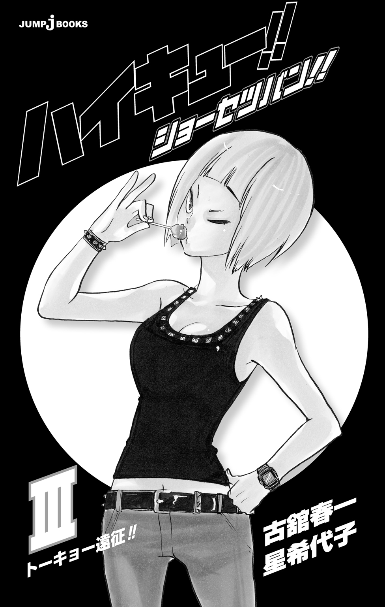
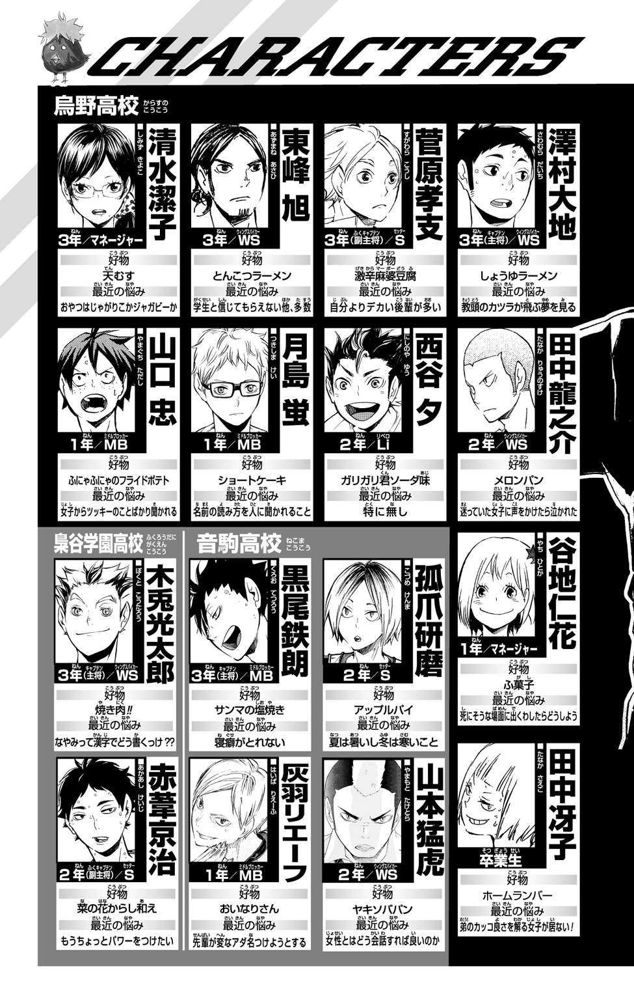

| ハイキュー!! ショーセツバン!! III トーキョー遠征!! | |
| 古舘春一 & 星希代子 | |
この本は縦書きでレイアウトされています。
また、ご覧になる機種により、表示の差が認められることがあります。
この作品はフィクションです。
実在の人物・団体・事件などにはいっさい関係ありません。


COTENTS
HAIKYU FIGHTER

土曜日は快晴だったが、窓の外を見ている生徒はひとりもいない。ほんの数人しか席についていない教室は静かで、シャープペンシルの芯が紙の上を走る音に、咳払いや消しゴムを取り落とす音が混ざるだけだ。
今は期末テストで赤点だった生徒たちの補習中。しかし、それももうすぐ終わる。
時計の針が11時30分を指し、終了のチャイムがけたたましく響いた。
かじりつくように机に向かっていた日向翔陽の手から、シャープペンシルが力なく落ちる。次いで、まだ鳴り終わらないチャイムをかき消すような絶叫が教室を満たした。
「お、終わ......、終わったああああッ......！」
すすけた天井に向かって日向が叫ぶと、同じく補習を受けていた影山飛雄が怒鳴った。
「モタモタしてんな、ボゲ！ 早く行くぞ！」
「わかってるよ！」
ふたりのやりとりを見て、補習立ち会いの教師――日向の担任だ――が軽く教壇を叩いて言った。
「ほら、黙れー。答案用紙を後ろから......」と言いかけて教室を見まわし「これだけしかいないし、おのおの前まで持ってこーい」
「はいッ！」
すでに重そうなカバンを肩にかけているふたりが、そろって教壇に駆け寄り答案用紙を渡した。そして競いあうかのように、脇目もふらず廊下へ飛び出していく。
「......まったく」
廊下を走るなと注意する代わりに小さくため息をつくと、教師は廊下を急ぐふたりのバレー部員に手を振った。
「ガンバレよー！」
ふたりの所属する烏野高校バレーボール部は、今日から東京遠征だった。他の部員はみんな、前日の夜中に東京へ向けて出発している。赤点を取った日向、影山の両名は、補習を終えた今から仲間を追いかけるのだ。
他の生徒たちが教室を出ていくなか、教師は答案用紙をまとめながら腕時計に目をやった。11時35分。さて、彼らが無事に東京へ着くのはいったい何時になるだろうか。
開け放たれた窓から入る心地よい風が、教室のカーテンを軽く揺らす。校庭に濃く短い影を落として、夏服のふたりが駆けていく。
〝レッツゴートーキョー!! 本番!!〟
校門まで駆けてきたふたりの前に、１台の軽トラック、いや荷台つきミニバンが音をたてて停まり、目つきの鋭い年上の女性が降りてきた。少し派手めの化粧に、ぴったりとしたタンクトップと細身のジーンズ、そしてブーツを履いた女性は、明るい色の髪をなびかせてふたりの前に立ちはだかる。車のイメージと降りてきた女性とのギャップに、ふたりは言葉を失った。
「ヘイ、赤点ボーズども」
颯爽と現れた女性が、緊張するふたりを見てニヤリと笑う。そして車体に『烏野食堂』と書かれた車を、真っ赤に塗られた爪で指さした。
「乗りな」
「たっ、田中さんのお姉さんですかっ？」
息急きこんで日向がたずねると、彼女は少し表情をゆるめる。
「冴子姉さんと呼びな。東京までなんて、あっという間に届けてやるよ」
そう言ったかと思うと、バチンとひとつウインクを決める。その少し乱暴な色気に面食らって、制服のふたりは思わず姿勢を正した。
「ハイ！ 冴子姉さん!!」

補習は土曜日、そして東京遠征は土曜日と日曜日の２日間。両イベントの日程が重なっていたため、バレー部では赤点をとった者は遠征に参加できないとされていた。留守番になってはかなわないと、部員たち――主に田中、西谷、日向、影山という、学力に多大な問題を有する４人は、チームメイトの力を借りながら必死に勉強していたのだ。
しかし、日向と影山の結果は赤点。音駒高校と再戦できるとあって期待も気合いも十分だっただけに、補習が決まったふたりの落胆は見るに堪えないものだった。
「あんまり落ちこむなよ、遠征は今回だけじゃないし」
テストが返された日、副主将の菅原はそう言って慰めようとしたが、当のふたりは当然あきらめきれず、自力で東京へ行く手段を相談しあっていた。
「走るか」
「チャリだろ」
そんな日向と影山に救いの手を差し伸べたのが、２年の田中だった。
「お前ら赤点は１コだけだな？ それなら補習は午前中で終わるハズだ」
天から降りてきたクモの糸のような台詞に、ふたりはハッと顔を上げる。
「そしたら、俺が『救世主』を呼んでやろう」
そして今、補習を終えたふたりの前に現れた田中の姉、冴子こそ『救世主』だった。
「かっこいい車ですね！」
助手席に乗りこんでシートベルトをしめた日向は、棒つきキャンディをくわえたままキーをひねる冴子を見た。
「これなら、荷台に太鼓が積めるからね」
エンジンの音が響くと同時に発せられた答えに、日向が首をひねる。
「太鼓？」
「和太鼓だよ。今度見に来たらいいさ。えーっと、東北道を真っすぐでいいんだよな......」
そう言ってシフトレバーを握り、おもむろに車を出発させた冴子の姿は「姉さん」と呼ぶにふさわしい頼もしさで、まさしく『救世主』に違いなかった。
だからだろうか、あのとき田中がつけ加えた注意を、日向も影山もすっかり忘れてしまったのは。
その注意とは――
「ただし、乗車中の安全および快適性などについてはいっさい保証しないがな」
というものだった。
後部座席に乗ってすぐに眠ってしまった影山とは対照的に、助手席の日向はどこか心配そうな顔で道の先をじっと見つめていた。
合宿とはいえ、合同練習は20時頃には終わってしまうだろう。それまでに無事東京へたどり着けるだろうか。渋滞に巻きこまれたり、道を間違えたりはしないかと、日向は気が気ではなかった。赤点さえとっていなければ、今頃もう研磨や犬岡たちと練習できていたのに......。
ギュッと唇を嚙んだ日向の頰を、運転席から手を伸ばした冴子がつねる。
「オラ、そんなに思いつめんな。焦るのはわかるけどな」
そう言うと、驚いて頰を押さえた日向を目の端でチラリと見て続けた。
「回り道には、回り道にしか咲いてない花があんだからさ」
冴子の言葉に、日向の顔がパッと輝く。
「よくわかんないけど、かっけえ！」
「アタシの隣でドライブできてんだから感謝しろってこと！」
そう言って笑った横顔は田中にそっくりで、日向はつい笑ってしまう。そして、とにかくこの人に任せよう！ と覚悟を決めることができたのだった。
「なにニヤニヤしてんのさ」
「なッ、なな、なんでもありませんッ！」
あわてる日向を見て、冴子が苦笑する。
「まあ、緊張して吐かれるよりいいか。あんただろ？ 弟の股間にゲロ吐いたの」
「う......、は、はい......」
「吐きそうになったら、すぐ言うように！」
東北自動車道の入口を示す標識が見えた。３人を乗せた車がその下を通り過ぎる。東京への約４００キロのドライブが、今はじまった。
「それにしても、よくもまあ見事に赤点なんてとったもんだね。ウチの弟や夕だってなんとかなったってのにさ」
自宅の２階に集まり、柄にもなく勉強などしていた弟たちを思い出して冴子は言った。あの弟より勉強ができないとは、このふたりの成績は惨憺たるものなのだろう。まあ、弟が頭を下げてドライバー役を頼んできたからには、バレーボールに対しては熱いやつらなのだろうが......。
痛いところを突かれた日向が、しどろもどろになって説明する。
「そ、それは......あの、英語のテストで、解答欄がひとつズレてしまいまして......」
「え!? 答えはあってたのにかい？」
「......ハイ」
テストが返ってきた日のショックを思い出し、日向の眉間にぎゅっとシワが入る。しかし、冴子は明るく笑い飛ばした。
「ハハハ、そりゃあバカだね。答えを間違えるよりバカだよ」
「うぐ......」
日向が言葉に詰まっていると、後部座席で寝ていた影山も顔を出した。
「俺は、普通に答えを間違えて赤点ですけど」
「そうかい、そりゃまっすぐなバカだね」
「な......」
冴子は明るく笑ってＥＴＣのゲートを通り抜けると、スピードを上げた。
「まあ、悔しいことが多ければ多いほどイイ男になるってもんさ」
「イイ男!?」
日向と影山が予想外の言葉に目を見開く。
「そりゃそうさ、スポーツなんてやってたら悔しいことばっかりだろ？」
「......はい」
悔しいこと、と言われて、日向はＩＨ予選を思い出さずにはいられなかった。強豪、青葉城西高校を相手にフルセットまで互角に粘った試合だ。もし、あと１センチ高く、あと１秒早く跳べていたら、あるいは......。
しかし、惜敗だろうと負けは負けだった。その結果の前では「もし」や「あと少し」なんていう甘い言葉に意味はない。再び立ち上がり、この悔しさをバネに跳ぶしかないのだ。
「ウチの弟も、そりゃあ悔しそうな顔して帰ってきたよ。１年のときなんて、もうずっとそんな顔ばっかりだったけどさ」
自分の手のひらを、悔しさを、じっと見つめていた日向が我に返る。
「え、あの田中さんが？」
「そりゃそうさ。負けただの、レギュラーになれなかっただの......。まあ、自分からペラペラ喋るタイプでもないけど、あいつもあんたらに負けない、わかりやすいバカだからね。顔を見りゃどんだけ悔しいかわかるさ」
「田中センパイは、いつもカッコイイです！」
力強い日向の言葉に、冴子は「だろ？」と笑って前の車を追い抜いた。加速で背中がシートに押しつけられる。
「バカのわりに話がわかるね。でも、あの良さがわかる女子はなかなかいなんだよなあ......」
「女子？」
日向の脳裏に、田中を冷たく一瞥するマネージャー清水の顔が浮かぶ。日向は真面目な顔をしてうーんと唸った。
「女子に伝えるのは、なかなか難しいかもですね......」
「なーにナマイキ言ってるのさ」
「サ、サーセン!!」
笑う冴子に謝りながら、日向は田中の顔を思い浮かべた。あのいつも熱くて前向きに見える田中先輩に、そんな時代があったなんて。いや、時代というほど昔でもない。ほんの１年前のことなのだ。
先へ、もっと先へいきたい......！
武者震いだろうか、体がブルッと震えるのがわかった。
日向は東京へ続く道路の先を見る。
早く合宿に合流したい。音駒だけじゃない、まだ出会ったことのないチームと戦いたい！
再び体が震えて、息が詰まる。
この感覚......。
日向は、自分の中からこみ上げてくる熱いものに気づいた。そしてハンドルを握る冴子を見据えると、言った。
「スミマセン、冴子姉さん。あの、おれ、あの......トイレ!!」
「え？ 今かい!?」
冴子があわてるのも無理はない。助手席の日向はすっかり真っ青な顔をしてプルプルと体を震わせてすらいるのだ。
「おい、ここで漏らすなよ！ これ、食堂の車なんだからな！ サービスエリアまで我慢しろよ！」
「トイレトイレトイレトイレ――!!」
サービスエリアに着くと、日向はスポーツタオルを片手に一目散に車を飛び出した。影山もあわてて後を追う。
「ボゲ！ フライングすんな！」
外へ出た冴子は、走るふたりの後ろ姿を見送ると大きく伸びをした。頭上には気持ちのいい夏の青空が広がっていて、ドライブにはうってつけの日だ。こんな責任重大なドライブじゃなかったら、もうちょっと楽しめただろう。
棒つきキャンディをぽんっと音をたてて口から出すと、冴子は遠い目をしてつぶやいた。
「目つきの悪いほうも、我慢してたのかね......」
トイレを探してサービスエリア内を走っていた日向の足が止まった。
「あ」
その視線の先には売店が、そしてその店先には山と積まれた季節の果物があった。
「桃、スイカ......おいしそう......。あ、ソフトクリーム！ 玉こんにゃくもある！」
ふらふらと売店へ引き寄せられる日向を、追いついた影山が捕まえる。
「おい！ なにフラフラしてる、先に便所だろうが！」
「わ、わかってるよ！......う、出る！ オベンジョベーン!!」
バタバタと駆けだした日向にあきれる影山だったが、トイレで用を足して出てくると、さらに啞然とする光景が目に入った。
少し前にトイレを出て行った日向が、いきなり飛びかかってきた大型犬に驚いて尻もちをついたのだ。
「う、うわあ！」
「おい、嚙まれてないか？」
影山はすっかり犬に組み敷かれた日向にそろそろと近づいていった。嚙まれてはいないが、ベロベロと顔中なめまわされている。
「ヤメレー!!」
叫ぶ日向を助けようと手を伸ばすと、獲物を奪われるとでも思ったのだろうか、顔をあげた犬がウォンッ！ と威嚇してきた。思わず後ずさる影山を見て、犬は満足そうに鼻を鳴らした。そして日向が持っていたスポーツタオルをくわえると、いきなり走りだしたのだった。
「おれのタオル！」
日向は、あわてて立ちあがると逃げだした犬を追いかけた。
「待てー！ ドロボー!!」
「ったく......」
そして、影山も日向と犬を追って駆けだした――。
「捕まえたーッ!!」
戦利品を埋めようとしたのだろうか、地面に穴を掘っている犬を見つけると、日向と影山は後ろから飛びかかった。そしてタオルを奪い返した日向は、息もきれぎれに説教を始める。
「お、お前なー、人のものを勝手になー！」
そこへ、後から追いかけてきたらしい飼い主もやってきた。
「す、すいません！ うちの犬が！」
「あ、イエ、もう返してもらったからダイジョーブです！」
犬を連れて戻る飼い主に取り返したタオルを振っている日向の隣で、影山がつぶやいた。
「......おい、ここ、どこだ？」
「え？」
日向はハッとしてあたりを見まわした。犬を追っているうちに、ふたりは烏野食堂号からずいぶん離れたサービスエリアの端まで来てしまっていた。
「ヤバイ！ 早く戻んなきゃ！」
「お前、車の場所分かるか？」
「え？」
１００台近い車の入る駐車場は週末の昼時のためかほぼ満車で、キラキラと太陽を反射した屋根がどこまでもどこまでも連なっている。
「......車、どこだ？」
尿意に気をとられすぎていた日向は、どのあたりに車を停めたのか確認もせずに飛びだしていたのだった。さらにこんな遠くまで来てしまっては、もう簡単に戻れる気はしなかった。
「......探すぞ」
さっさと駐車場に向かって歩きだした影山を、日向があわてて追いかけた。
容赦ない真昼の太陽が頭にジリジリと照りつける。さらにアスファルトの照り返しで下からも熱され、ふたりの迷子はすぐ汗だくになった。
影山が、不機嫌を隠しもせずつぶやく。
「......ったく、お前が勝手に飛び出すから」
「おれのせいかよ！」
「そんなこと言ってねーよ！」
「言っただろ！」
しかし、不毛な言い争いをしても体力を奪われるだけだと気づいて、ふたりはどちらからともなく黙った。そして１台１台、黙々と車を見ていくうち、車のエンジン音やスピーカーから流れる音楽のすき間をぬって、かすかに子供の泣き声を聞いた気がした。
「ん？」
休日の家族連れだろうか。はじめはさほど気にもとめず車探しを続けたふたりだったが、その泣き声はやむ気配がなく、なだめたりあやしたり叱ったりする大人の声も聞こえてこない。
「......おい、大丈夫かな？ おれ、気になって車とか探せないよ」
日向はそう言うと、キョロキョロとあたりを見まわした。そして車を２、３台越えたところで、ふたりは車と車の間にしゃがみこんで泣いている小さな女の子を発見したのだった。真っ赤なワンピースを着て丸まった姿は、幼稚園児くらいだろうか。
「おい、どうした」
影山が声をかけると、子供は顔を上げた。しかし遥かな高みから自分を見下ろす汗だくの男に気づくと、一瞬の間ののち顔をくしゃくしゃにしてさらに泣きだす。
「ふ、ふえええ......」
日向は「ごめんな、こいつちょっと怖いよな。逆光だしな」と子供に声をかけてから影山に向き直ると、どこまでも真面目な顔で言った。
「お前さ、顔が怖いからちょっと下がっててもらえるかな」
「なッ......顔......？」
固まった影山を押しのけて、日向は子供の隣にしゃがんでやさしくたずねた。
「大丈夫？ 迷子になっちゃった？ おうちの車、どんなのかわかるかな？」
日向を見た子供は、泣きやみはしたが、ギュッと口を結んだまま喋らない。
「ど、どうしよう。いっしょに探す時間はないよな......。でも、この子おいてけないし、でも合宿に間にあわなかったら......」
日向は不安そうな顔の子供を見た。
「よし！ 迷子のお知らせ流してもらおう！ 行くぞ、影山！」
その言葉に、影山が顔を上げる。
「そんな時間あるのか、俺たちだって早く車見つけないと、夕方までに東京に......」
「だからって、この子おいてけないだろ！」
「だけど......」
影山は子供を見た。その視線に気づいた子供はサッと日向の後ろに隠れる。影山は内心ショックを受けつつも、また泣かれてはたまらないと目をそらして言った。
「......急いで連れてくぞ」
「じゃあ影山さ、この子、肩車してやってよ。お前ってデカいから遠くからも見つけられやすいだろ？ やっぱ迷子は目立たなきゃな！」
「そうか？ そういうものなのか？」
どこか納得いかないながらも、影山は素直に子供をヒョイッと持ち上げた。肩に乗せられた子供は、急に視界が広がったことに驚いたのか、泣くこともなく影山の髪をギュッとつかんでキョロキョロしはじめた。
その様子を見て日向が笑う。
「そこなら、影山の怖い顔見なくてすむもんな。おれ、ナイスアイデア！」
「なに!?」
「よーし、レッツゴー！」
かけ声とともに走りだした日向の後ろを、子供を肩車した影山がしぶしぶついていく。
「安心しろよ、すぐお母さんとこ連れてってやるからな」
子供を元気づけようとそう言った日向は、冴子の「あっという間に届けてやるよ」という言葉を思い出した。冴子に運ばれていた自分たちが、今度は迷子の子供を運んでいるのだ。
日向は思った。この子は、すぐそこの建物まで連れていけばいいが、冴子はふたりを乗せて４００キロ近いドライブをしなくてはいけないのだ。いったいどれほどのプレッシャーだろうか。
改めて冴子に感謝すると、日向は見えてきた案内所を指さした。
「そこのお姉さんに訊いてみよう！」
駆け寄って声をかけると、もう迷子の届けが出されていたのだろう、スタッフはすぐに「ああ、この子ね」と、中に入っていった。
そして建物から憔悴した両親が出てくると、影山の肩にいた子供は「おかあさん！」と叫んで下に降りたがり、ジタバタと暴れた。その元気な様子に、両親の表情がホッとゆるむ。
「おい、危ないから暴れんな......じゃなくて、暴れないで......くれ？ ください......？」
さっき怖がられたのが効いたのか、影山は、らしくもなく口調に気を遣いながら子供を降ろした。母親の懐へ飛びこんでいく子供に、日向が手を振る。
「もう迷うなよ！」
そのとき、頭上のスピーカーから流暢なアナウンスが流れた。
――烏野高校の日向様、影山様、レストラン前でお連れ様がお待ちです。烏野高校の日向様、影山様......。
「え......！」
ふたりが顔を見あわせる。母親に抱かれてやっと笑顔を見せた子供が、小さな手を振って言った。
「まようなよ！」
建物の外へ走っていった日向と影山は、木陰のベンチでブーツの脚を組み、けだるそうにソフトクリームをなめている冴子を見つけた。ふたりは深々と頭を下げる。
「さ、冴子姉さん！ スイマセンッ......!!」
「お前ら、本当にバカなんだな」
冴子はコーンの包み紙を丸めてゴミ箱に投げこむと、パキッと指を鳴らした。
「さて、夕方までに間にあわせるからね。ちょっと荒っぽくいくよ」
宣言通りスピードを増した車は、軽自動車らしく多少の振動は気になるものの、順調に東北自動車道を南へ進んでいった。そして車中の３人は、カーステレオで和太鼓の演奏を聴いたり、冴子の高校時代の武勇伝や弟としでかしたイタズラなど、主に口外できないタイプの話を聞いたりと、急ぎつつも道中を楽しんでいた。
単調な風景が続く高速道路をひとりで３時間ほど運転していた冴子は、本当はかなり疲れているだろうに「騒がしいのがいると目が覚めるよ」と、機嫌よく笑っていたのだった。首都高に入るまでは。
そう、高層ビルや派手な看板が目につく首都高に入ってしばらくすると、車内の空気は一転、すっかり険悪になっていたのだ――。
日向は後部座席で眠る影山におずおずと声をかけた。
「おい、起きろよ。もうすぐ着くぞ」
だが「着かねーよ」と不機嫌そうに舌打ちしたのは、影山ではなく運転席の冴子だった。日向はあわてて「で、ですよね！」と窓の外を見る。
窓の外、冴子の不機嫌の原因はそこにあった。どこまでもどこまでも続く車の行列、大渋滞だ。
「......なんなんだよ、この渋滞は」
冴子のイラついた声に、日向がビクンと体を震わせた。ぐっすり眠っていた影山も「んあ？」と目を覚ます。
週末の首都高は、現在20キロの渋滞。車は時速15キロも出せていなかった。
「ったく、どこが『高速』だよ。チンタラしやがって......」
イライラとハンドルを握る冴子は、前方に現れた「７００メートル先出口」と書かれた標識をじっと見つめてつぶやいた。
「出口か......」
めざす梟谷学園近くの出口は、まだまだ先だった。
あとどれだけこの徐行運転を続けるんだろうか。考えただけで反吐が出そうだ。ひとつ舌打ちしてウインカーを点滅させると、冴子は宣言した。
「よし、ここで降りるよ」
「え、ここで？ 歩くの!?」
あたふたとドアの取っ手に手をかけた日向に、冴子が怒鳴る。
「バカ、死ぬだろうが！ 高速を降りるんだよ」
「へ？」
まだ飲みこめていない日向に、冴子が言った。
「こんなとこでチンタラしてたんじゃ、夜になっても着かねーよ」
「そ、それは困ります！」
日向と影山が声をそろえる。冴子は満足そうにうなずいてハンドルを切った。
「だろ？」
高速を降りて一般道を道なりに直進すると、すぐに大きな交差点に出た。赤信号で停車し、案内標識を見てみるが、そのどれにも見なれない地名しか書かれていない。見知らぬ街のまん中で、さすがの冴子も少し緊張したように唇をなめた。
「さて、どっちに行きゃあいいかね......」
日向は目の前のグローブボックスを開けて、中の地図を取り出した。そしてその表紙を見ると、信号をにらんでいる冴子におそるおそる聞く。
「あの、東京って、東北じゃない......ですよね？」
車に入っていたのは東北の道路地図だったのだ。
「お前、本当に赤点は英語だけか？」
冴子は冷たくそう言うと、前を見たまま続けた。
「アタシゃ、どうも地図ってのが性にあわないんだよ」
「性？」
日向は地図に目を落とした。たしかにあまりめくられた様子はない。試しにパラパラとページをめくってみた日向だったが「これは......」とつぶやくと、急いでパタンと閉じてグローブボックスにしまう。
「これは、おれの性にもあわないかも......」
後部座席の影山はといえば、まだ寝ぼけているのか、夢の内容でも思い出そうとしているのか、ぼんやりと目の前の交差点を見つめている。
信号はもうすぐ青になる。冴子が意を決したように不敵な笑みを見せた。
「......こんなところで、切り札を使うことになるとはね」
冴子の横顔に、さっきまでの迷いはなかった。
「いいかい坊や。イザってときに人生を決めるのは地図でもなけりゃ、ベンキョーでもないんだよ。赤点上等」
「え？ あ、ハイ！」
急に話を振られた日向が、よくわからないながらも姿勢を正すと、信号が青に変わった。前の車がゆっくりと動きだす。
「大事なのは、野生の生命力！ つまりは勘！ 女は度胸！」
そう言うと冴子はウインカーを点滅させ、乱暴にハンドルを切った。タイヤをキュッと鳴らして交差点をＵターンする。
「え、戻るの！ ていうか、勘!?」
日向がシートベルトごと右に引っ張られながら声を上げ、後ろでぼんやりとしていた影山もさすがに我に返って冴子を見る。冴子は高らかに笑って言った。
「押してダメなら引いてみな、って言うだろ！」
「時と場合によるんじゃ......」
ぼそっとつぶやいた影山に「うるせーよ、赤点ボーズ」と言い返す。赤点上等ではなかったのかと影山は思ったが、もちろん口にはしない。
そして冴子は野生の勘とフィーリング、と自分で呼ぶものに従って渋滞のない道を機嫌よく運転しはじめた。国道を外れた車は大きな駅前のロータリーを回り、繁華街を横目に緑の多い大きな公園を通り抜け、活気のある商店街を突っきっていった。その運転にはどこか安心感があり、日向も影山も迷っているような印象は受けなかった。
しかし閑静な住宅街をしばらく走っているうち、その安心感が消えていく。大丈夫かなと日向が運転席を見ると、冴子は車を路肩に停めてキッパリ言った。
「これは、迷ったね」
そして、日向と影山に「悪ィ」と頭を下げて続ける。
「まあ、心配すんなって。方向はこっちで合ってんだからさ。高速でノロノロ走ってるよか早く着くさ。じゃあ、ちょっと戻るか。こっちの道はゴチャゴチャしていけないよ」
そのときだった。
後ろでクラクションが鳴る。
「ん？」
バックミラーをのぞくと、ちょっとどうかと思うほど車高が低く、エアロパーツをたっぷりとほどこした改造車が、パウンと甲高い排気音を立てて追い抜いていくところだった。
「チッ......悪かったよ、こんなとこで停めてさ」
冴子は小さく舌打ちしつつもペコリと頭を下げて見せたが、その改造車は威嚇するように再度クラクションを鳴らし、わざわざ窓から顔を出して「チンタラしてんじゃねーよ」と言い捨てたのだった。そして、さらには煙草の吸い殻まで投げ捨てていく。乗っていたのは冴子と同じくらいの年頃だろうか、派手な身なりの少し怖そうな男女だった。
日向が助けを求めるように運転席の冴子を見た。
「冴子姉さん、トーキョーは怖いとこで......ヒッ！」
日向は小さく叫んでシートベルトを握りしめた。
日向が見たものは、さっきの男女など比べものにならないほど怖ろしい冴子の顔だった。その目はすっかり怒りに燃えている。他校の選手を威嚇しているときの田中より怖い。冴子はギリッと歯を鳴らし、プルプルと震える手でハンドルを握り直した。
「この......烏野の女豹といわれた冴子サマに、よくも......!!」
「メ、メヒョー？」
おびえる日向など目にも入っていない。冴子はガキッとギアを入れたかと思うと、雄叫びを上げてアクセルを踏みこんだ。
「待っちゃーァがれッ、コラーッ!!」
急な加速に、日向の小柄な体がシートに打ちつけられる。
「うわッ......ていうか、冴子姉さんも『コラ』って言うんだ！ 田中さんといっしょだ！」
「今それどころじゃないだろうが、ボゲ！」
さっきまで上の空だった影山が、身を乗り出して怒鳴る。日向も負けじと言い返した。
「影山は『ボゲ』ばっかりだな！」
「バカふたり！ うっせーから黙れ！」
改造車を追う冴子がハンドルにかぶりついて怒鳴ると、ふたりはビシッと背筋を伸ばして声をそろえる。
「は、ハイッ!!」
助手席で一部始終を見ていた日向は後に語る。「あのとき、冴子姉さんのスイッチがカチッと音を立てて入ったのがわかりました」と――。
改造車も追われていることに気づいたらしい。あわてたようにタイヤを鳴らして角を曲がった。住宅街で自慢のスピードが出せないぶん、路地へ入ってまこうとしているのだろう。
「小癪な軟派野郎がッ......！」
すっかり荒ぶった冴子が忌々しげに吐き捨てる。たしかに道はわからないし馬力もないが、細い路地なら小まわりのきくこちらのほうが有利だ。
「バカにすんじゃないよ！」
冴子は獲物をロックオンした豹のように舌なめずりすると、路地に入った改造車を追って荒々しくハンドルを切った。車体が傾き、日向の乗った助手席側が一瞬ガタッと浮く。
「うわ!!」
日向がシートベルトを握りしめる。冴子は窓を開けて外へ身を乗り出すと、片手を振り上げながらダミ声で叫んだ。
「待てや、コラーッ!!」
日向と影山があわてて冴子の体を引っ張る。
「冴子姉さん、危ないですッ!!」
「ハンドル！ ハンドル持ってください!!」
ドスッとシートに戻った冴子は「絶対......シメる！」とさらにヒートアップする。前をにらむ目の色が変わっている、女豹の目だ。
「オラ――――ッ!!」
冴子の気迫が伝わったのだろうか。逃げる車の側面がマンションのゴミ集積所をこすった。ボガンと派手な音を立ててポリバケツが飛び、ゴミを漁っていたカラスが飛び立つ。
「うひゃあ!!」
日向がシートベルトを握りしめたまま叫び、影山が頭を抱えてつぶやいた。
「お、おい、合宿はどうなるんだ......」
すると、冴子はマナー知らずの改造車を追いながらも、振り返った。
「大丈夫、女に二言はないよ。アイツらのナンバープレート見たかい？ 梟谷のあるエリアだよ。追いかければ近くまで行けるってこと！」
そう言ってウインクする冴子に、影山が叫ぶ。
「前！ 前見てください！」
サルスベリやムクゲなど、鮮やかな夏の花が右に左に咲き誇る細い路地を、その場にそぐわない改造車がクネクネと曲がりくねりながら逃げていく。タイヤのこすれる耳障りな音に、生け垣から路地を覗いた住人が眉をひそめる。日向が車の中から「おさわがせします......」と頭を下げた。
冴子はジリジリと改造車との距離を詰めていた。今や、改造車の助手席に乗った女がこちらを指さしながら運転手に何か怒鳴っているのもはっきりと見える。
冴子は鼻で笑った。
「フン、追いつめられてる最中に痴話ゲンカとは、悠長だねェ。馬力じゃかなわないが、こっちは覚悟が違うんだよ！ 絶対にふん捕まえて、謝らせてやるからね！」
もうすぐ追いつけるとふんだ冴子は、鮮やかにハンドルを切って角を曲がった。しかし、その先に開けた景色に絶句する。
「坂......!?」
車が出た道は、まっすぐ続く上り坂だった。その先には、あっさりと坂を上っていく改造車が見える。排気量の小さな軽自動車では、上り坂で追いつくのは難しい。冴子は悔しそうに唇を嚙んだ。
「油断したよ、ここで逃げきろうって魂胆だったのか......」
あともう少しで追いつけそうだったのに、どんどん離されていく。小さくなっていく改造車のリアウインドウ越しに、こちらを見て笑う女の姿が見えた気がした。
「おわった...」
日向がそうつぶやいたが、運転席の冴子は鼻息も荒くシフトレバーを握り、ギアをセカンドに入れた。
「なに言ってんだい、まだおわってないよッ!!」
冴子の言葉に、日向がハッと顔を上げる。
「おいチビ、エアコン切りな。余計なところにパワー使えないよ！」
「ハイ！ 冴子姉さん！」
日向がエアコンを止めて、窓を開けた。
前で盛り上がるふたりを見ながら、後部座席の影山はまだ考えごとをしていた。高速を降りてからずっと、何かを思い出そうとしていたのだ。影山は、なにかとても大切なことを忘れている気がしていた。
「なんだったかな......」
冴子がアクセルを踏みこむ。リアタイヤが何度か空回りしたあと、右に左にブレながらも車は前へ飛び出した。しかしすっかり遠く小さくなった改造車は、ちょうど坂を上りきって視界から消える。
「......まだまだァ！」
汗を浮かべて冴子が吠え、車内が一気に熱くなった。エンジン音が大きく高くなり、フレームがきしむ。それでもスピードはなかなか上がらない。
「クソッ！」
悔しそうに吐き捨てる冴子の隣で、日向が力の限りに叫んだ。
「行けエエエッ！ 烏野食堂号ォォォォッ!!」
あえぐように坂を上りきった車が、坂の頂上で勢い余ってふわりと浮いた。内臓が持ち上がったような感覚に、日向は目を白黒させてシートベルトを握りしめる。
「うわ......、飛ん......だァ！」
フロントガラス一杯に、夏の青空が映る。１羽、ゆったりと飛んでいるカラスがこちらを見た気がした。そして、その下に東京の街が広がっている。ジオラマのような高層ビルの合間に、小さく尖った建物がチラリと見えた。
「あ、スカイツリー!!」
思わずさけんだ日向に影山が悠長にも首をかしげる。
「東京タワーじゃないか？」
「黙りな、バカ２匹！ ただの鉄塔だよ！」
冴子がどなると同時に、車が着地して跳ねた。
車はすぐに体勢を立て直したが、冴子は走り出さずにブレーキを踏んだ。日向が驚いて前を指さす。
「あいつら、なんであんなことになってんだ!?」
日向が指さした先、車道の真ん中には例の改造車が停まっていた。「あんなこと」というのは、ハンドルを取られでもしたのだろうか、車はクルリと半回転して前後が逆になっているのだった。まっすぐこちらを向いたフロントガラスの中で、ケンカしている男女が見える。怪我をしている様子はない。
「おい、大丈夫か！」
冴子が車を停めて飛びだしていくと、後部座席の影山はようやく口を開いた。
「あ、わかった」
「ん？ なにがだよ」
振り返った日向に、影山が答える。
「ほら、田中さんが言ってただろ」
「え、なんだっけ？」
「乗車中の安全および快適性などについてはいっさい保証しない、って」
「今さら、遅いだろ......」
日向はフロントガラス越しに冴子を見た。男女を引きずり出して正座させ、こんこんと説教している。夕方が近づいているのにまだ明るい空には、ゆったりとカラスの群れが飛んでいた。
赤く染まりはじめた郊外の空の下、どこまでも続く鉄塔と並行する道路を冴子たちの軽自動車が走る。その前を行く車は例の改造車だ。派手なその車はもう逃げてはいない。それどころか冴子たちの車をナビしながら走っているようだ。
棒つきキャンディをくわえたままハンドルを握る冴子が、明るく笑う。
「まあ、たいていのロクデナシとはオトモダチになれるからね。バカなだけで、悪い奴じゃないさ」
「友達......っていうか、手下にしましたよね」
後ろから影山が訂正するが、冴子は悪びれもせずにあっけらかんと笑う。
「まあ、生命力の差ってことさ、細かいことは言いっこナシだよ。女は愛嬌！」
「弱肉強食......」
ポツリとつぶやいた影山に、日向が真面目な顔で言った。
「お前、現国赤点なのによく四字熟語出てきたな。補習の成果か？」
「うるせーよ！ お前だって英語赤点だろ！」
「おれは答えは合ってたんですー！」
騒ぎはじめたふたりをチラリと見て、冴子が苦笑する。
「まったく、バカほど元気だねえ......」
ナビをしていた改造車が、ウインカーを点滅させて停まった。ドアが開き、派手な身なりの男がやつれた顔をして出てくる。逃げているときにどこかにぶつけたのだろうか、それとも彼女に殴られたのだろうか、リーゼントが崩れ、サングラスはヒビ割れている。
冴子も車を止めて窓を開けた。外から生温い風が吹きこみ、男の整髪料の匂いが入ってくる。男はペコリと頭を下げると、冴子の機嫌を伺うように言った。
「......さ、冴子姉さん。あと、ここまっすぐ行ったら梟谷学園なんで......。俺たち、もうここで、あの、帰らせてもらっていいッスか......？」
「ああ、サンキュー。やっぱ地元人は抜け道とか知ってるもんだね。早く着いて助かったよ。じゃ、またね」
冴子はあっさりとそう言って手を振り、愛嬌たっぷりのウインクをプレゼントした。
「ひいッ！」と震え上がった不良の隣に、連れの女がやってくる。彼女は男とは違い、屈託なく笑って窓に手をかけた。
「冴子姉さん、また遊んでね。楽しかった！」
「バカだね。アンタ、つまんない男とつきあってると時間のムダだよ」
そう言って手を振ると、冴子は「またね」と窓を閉めた。日向と影山も「あ、ありがとうございました......」と頭を下げる。
ふたりをあとにして、車が動きだした。日向と影山は振り返って窓の外を見た。どんどん小さくなっていく派手な改造車のそばに、ハイヒールで飛び跳ねながら手を振っている女性と肩をすくめた男の姿が見えた。
道の先に、夕焼けに染まった校舎が見えてくる。目的地、梟谷学園だ。ものすごく長かったようにも、あっという間だったようにも思えるドライブもここで終わりだった。冴子はキッとタイヤを鳴らして、車を敷地に入れた。
「ほら、行くよ！」
車を停めて、冴子が飛び出す。日向が後部座席のバッグをつかんだ。
「ほら影山、お前も急げって！」
「わかってるっつうの！」
怒鳴りあいながらふたりが転がり出る。
まだ練習は続いているだろうか、部員たちはちゃんといるだろうか......。
冴子はブーツを脱ぎ捨てて校舎に入ると、息をきらして重たい体育館の扉を開けた。
蛍光灯の光が目に刺さる。そして、弾むボールの音、シューズのこすれる音......。４時間かけてめざしてきたバレーボールの音が溢れ出てきた。
冴子は絶えて嗅いでいなかった、高校の体育館の匂いを感じてニヤリと笑った。
「まだやってんじゃん。間にあったね、上出来」
そして日向と影山も駆けこんでくる。ふたりの顔は、これまで車の中で騒いでいた赤点高校生とは違う、どこかたくましいバレーボール選手の表情に変わっていた。
体育館の中でへたりこんでいた、烏野高校のバレー部員たちが一斉に冴子を見る。そして１年生ふたりの到着に気づくと、疲れが吹き飛んだかのように立ち上がった。
その笑顔を見て、冴子は思った。
今、この瞬間から、彼らの合宿本番が始まるのだ。
遅れて登場したふたりを小突き、軽口をたたいて笑っている部員たちを見ているうち、冴子は忘れていた疲れがどっと襲ってくるのに気づいた。この暑いなか、うっかりダッシュなんて......ふたりのバカがうつったかね。
そして休憩もせず、さっそくアップを始めた日向と影山の姿を見ながら、苦笑いをした。
「......今夜は、たっぷり吞ませてもらうよ」
HAIKYU FIGHTER ROUND.1
「おれより強い奴を探しにレッツゴー！」
にぎやかな夜の繁華街も、たった一本路地に入れば人通りはほとんどない。ビルの谷間、薄汚れた路地裏から、街の暗さに似あわぬ元気な声が聞こえてくる――。
「旋回雷鳴拳！」
小柄な少年が地面を転がりながら攻撃を繰り出し、長髪にヒゲの対戦相手が吹っ飛んだ。
「っしゃッ、おれの勝ちィ！」
勝利に喜ぶ少年の名はショーヨー。漆黒の道着も凜々しい武者修行中の武道家だ。
「勘違いするな。お前が強いんじゃなくて、そいつが弱いんだからな」
冷たく言い放った白い道着の男はトビオ。ショーヨーと同じく武者修行中の身である。
この路地はケンカ自慢のファイターたちが集うリングなのだった。武道家に限らず、街の不良、破門された格闘家などが集まっては、夜な夜なルール無用の戦いを続けている。
「このへんの奴らはだいたい倒しちゃったし、つまんないなー」
戦いを終え、宿に戻ろうとするふたりの前に立ちはだかる影があった。
「え、えーと、止まるアル！」
現れたのは小柄なチャイナドレスの少女。ふるえる小さな手には、なんと拳銃をかまえている。とっさに臨戦態勢に入ったトビオの陰に隠れて、ショーヨーが叫んだ。
「チャ、チャイナ服なら拳法だろ！ なんで銃とか持ってんだよ、卑怯だぞ！」
「なんでってインターポールの捜査官だからしかたないアル......。あの、私の仲間になって、犯罪組織カラスノーと戦うなら撃たないので！ じゃない、撃たないアル！」
物騒な少女の言葉に、ショーヨーが身を乗り出した。
「え？ そのカラスノーってなに？ 強いの？」
「そりゃあ強いアル！ カラスノーの首領は、ビカーッとしたすごい眼力でサイキック攻撃を使うアル......。怖いアル......」
捜査官らしくもなくおびえた顔で答えると、警戒していたトビオの目の色が変わった。
「本当に強いんだな？」
そして隣で同じように目を輝かせているショーヨーを見た。
「......行くぞ。ここらのザコ相手じゃ腕が鈍る。この女がおかしなまねをしたら、そのときは叩きのめせばいいしな」
「よーし、じゃあ決まり！ 強い奴を探しにレッツゴー！」
そう言って飛び跳ねたショーヨーと仏頂面のトビオは、まるで競いあうかのように夜道を駆けだした。チャイナドレスの少女ヒトカがあわてて拳銃をしまい、追いかける。
「ちょ、ちょっと待つアル！ 場所わかってるアルか!?」
To Be Continued......
「ごはーんハハーン、ごはーんハハーン」
朝食の匂いがふわふわと混ざりあった廊下を、日向がやけに元気に歩いている。前日の長距離移動のつらさも、続く練習の疲れも、朝のけだるい眠さとも無縁といった後ろ姿だ。献立でも思い浮かべているのだろう、ニヤニヤと歩く日向に後ろから声がかかる。
「日向は、なんでメシの前からボール持ってるんだ？」
「え？」
日向は振り向いて声の主を見つけると、片手を上げた。
「あ、リエーフ、研磨おはよー」
朝の挨拶もなく声をかけてきたのは、１９０センチを超える長身に緑がかった瞳が印象的な男、音駒高校１年の灰羽リエーフ。その隣にいる毛先だけ金髪のプリン頭は２年の孤爪研磨で、眠そうな目をゴシゴシとこすっている。
「これ？」
日向は持っていたボールを両手でクルクルと回して答えた。
「おれ、まだへたくそだからさ。もっともっとボールに慣れなきゃダメなんだ。だから、一日中コレ持ってろって指令が出てんの」
「持ってるだけで上手くなるのか？」
興味津々といった様子で聞いたリエーフを見上げて、孤爪が言う。
「リエーフもやれば」
１年のリエーフは、見かけとは裏腹に高校からバレーボールを始めた初心者なのだった。とはいえ、長身と初心者離れしたセンスですでに音駒の戦力であり、同じく１年の犬岡とミドルブロッカーのポジション争いをしている。ちなみにロシア人とのハーフということだが、日本語しか喋れないらしい。
そのリエーフが、彫りの深い顔をあからさまにしかめてみせた。
「ヤですよ、ずっと持ってるとかめちゃくちゃ邪魔くさいじゃないですか！」
「初心者のくせに生意気」
そうつぶやいた孤爪を見て、日向がおかしそうに笑う。
「リエーフといっしょにいたら、研磨も先輩っぽいんだな！」
「え!?」
孤爪は先輩風を吹かせたわけでもボールの携帯を強制したわけでもなかったが、それでもチームメイトと話す様子は日向の目に新鮮に映った。メールのやりとりも「まあまあ」「一応」などとだいたい一言だけで、他人にはあまり興味のなさそうな孤爪が、後輩にアドバイスらしきものをしていたのだから。
「べつに、そんなんじゃないから」
心底嫌そうな顔をする孤爪を見て日向はまた少し笑い、そして思い出したようにつけ加えた。
「あ、そうだ。研磨さ、朝メシ終わったらちょっとトス上げてくれよ！」
「やだ」
孤爪の即答。
「えー、１本でいいからさ！」
「......めんどくさい」
ふたりの後ろからリエーフも口を挟む。
「ていうか、１本打ったって意味ないだろ？」
「だーかーらー、１本ってのは......まずは１本っていうか！」
日向が振り向いて言い返す。
「なんだ、日向は噓つきなのか」
「チーガーウー!!」
それぞれ相手を見上げ見下ろしながら、バレー選手離れした短躯の日向と１年生離れした長躯のリエーフが朝の廊下を騒いで歩く。ふたりに挟まれた孤爪がめんどくさそうにつぶやいた。
「ふたりともうるさい......」
そして日向、孤爪、リエーフの３人は、しあわせな匂いと朝の光に満ちた学食の扉を開けた。
「ごっはーん！」
「メシだメシ！」
「......眠い」
７月の週末合宿や今回の夏休み合宿などで合同練習をする、関東４校からなるグループをまとめる東京の梟谷学園、同じく東京の音駒高校、夏休みの合宿会場でもある埼玉の森然高校、神奈川の生川高校、そしてはるばる宮城からやってきた烏野高校。
この５校が同時にアップを始めた真夏の第一体育館は、早朝とはいえすでに十分暑く、日中の地獄を予感させる。
コートの外ではマネージャーの清水が、先日入部したばかりの１年生マネージャー谷地に「みんなの分だけじゃなくて、自分の水分補給も忘れないようにね。ガマンしないでね」とアドバイスしている。
日向は練習前のストレッチをしながらキョロキョロとあたりを見まわし、この夏２度目の遠征に上がりきったテンションを隠しきれずにいた。走り、跳び、打つ選手たちは、誰も彼もが自分より強そうに見える。それもそのはず、残念な事実だがこの５校の中で一番弱いチームが烏野なのだ。７月の週末合宿でも、その力の差は歴然としていた。
しかしそれはつまり、ここにいる全員から技を学び、盗むチャンスがあるということだった。烏野は新しい攻撃パターンを模索している最中でもあり、この合宿中、一分一秒だって無駄にはできない。そう思うと、日向は期待で体がうずくのがわかった。
「よーしッ、やるぞ!!」
気合いいっぱいでグイグイとアキレス腱を伸ばしはじめた日向に、菅原が声をかける。
「日向さ、元気なのはいいけど、ストレッチのとき力んだら意味ないからな」
「ウス!!」
合宿の内容は、７月と同じく５校でローテーションを組む練習試合がメインだ。コートを２面使って同時に２試合を行い、残った１チームは主審や副審、そして得点係などのサポートを担当する。負けたチームには厳しいペナルティもあり、いやでもバレー漬け、練習漬けの１週間を送ることになる。そのうえ、さらに自主練を行う者も多かった。
今日のローテーションは、烏野はまず試合のサポートからのスタートだった。主将の澤村が部員たちを集めて声をかける。
「じゃあ、日向と山口はあっちのコートでワイピングやって」
「ハイ！ 拭きながらバッチリ盗みます！」
真剣な顔で出し抜けにワケのわからないことを言う日向に、山口があわてる。
「え、何を!?」
澤村も一瞬キョトンとしたが、すぐに苦笑して言った。
「そうだな、俺もラインズマンやりながらたっぷり盗ませてもらうとするか！」
「え、主将まで!?」
ワイピング用のタオルを持って不安そうな顔をする山口を見て、田中や西谷も調子を合わせた。
「じゃあ俺は目標５個だ！」
「俺は10個盗むぜ！」
「お前ら、スイカ泥棒か......。技を盗むって話だよ」
縁下がアタフタしている山口に言った。
「えっ？ あっ、そうか！ びっくりした......」
「よし、そろそろはじまるな、いくぞ！」
主将の声に、烏野バレー部の面々がそれぞれの持ち場に向かって駆けだす。夏休み合宿２日目がはじまった。
５校が、ローテーションで練習試合をこなしていく。やはり群を抜いた力を持っているのは、全国でも５本の指に入ると言われるエース木兎を擁する梟谷学園だ。この午前中、ノーペナルティで勝ち続けている。生川と森然もパワーと攻撃力のあるチームで、音駒は変わらず安定のキープ力を持っている。昨日に引き続き、烏野は苦戦を強いられていた。
ボールがラインを越え、ホイッスルが鳴る。午前中最後の試合が終わり、ペナルティのため外へ出て行った生川高校をのぞいて昼休みになった。生川と入れ替わりで烏野が外から戻ってくる。連続３試合プラス３ペナルティをこなして、すっかり汗だくの日向が食堂へ行こうとするリエーフを見つけて駆け寄った。
「リエーフ、勝負だ！ 先にサーブ30本決めたほうが勝ちな！ 昼飯のハンバーグ賭けるぞ！」
「ん、ハンバーグ？ ......よし、のぞむところだ！」
リエーフも試合を終えたばかりだったが、ハンバーグにつられてすっかり乗り気で受けて立つ。
「お、俺もいいかな......」
サーブと聞いて、山口もおずおずと日向を見た。
「当然！ これでハンバーグ２個だ！」
勝つことが決まっているわけでもないのに、日向は今にもよだれを垂らさんばかりの顔で答える。さらには「じゃあ、俺もちょっと打っていくか」と東峰がボールを持ち、「ハンバーグ王に、俺はなる！」と田中が加わる。「俺も！ 俺もやる！」と、ボールを片づけていた音駒の犬岡も走ってきた。
影山はその様子を見ながら汗を拭いていたが、加わりはしない。前回の合宿の帰りに「目を開けて速攻を打ちたい」という日向と仲違いをして以来、日向と影山はまともに口をきいてもいなかった。
そのまま体育館を出ていった影山だったが、すぐに休憩するわけでも食堂へ行くわけでもない。その証拠には、手にボールを持っている。影山はひとりで新たなトスの練習をするつもりだった。
そして体育館を出ていこうとしていた音駒の主将黒尾が、コートに集まる烏野と音駒の部員たちに気づいて立ちどまる。
「なんだ？」
そしてサーブ勝負だとわかると、ニヤニヤと面白がるように言った。
「烏野のチビちゃんまだ動けるのか。相変わらずの底なしだな。どうだ、研磨もやるか、サーブ？」
「............」
返事もせずに出ていこうとする孤爪の肩を笑顔でガッシリつかむと、黒尾は「ちょっと見ていこうぜ」と、体育館の端にドッカリとあぐらをかいた。孤爪もしぶしぶ隣で膝を抱える。
ハンバーグを賭けた６人が、エンドラインに並んだ。
「じゃあ、はっじめー!!」
元気に声を上げて、日向が打つ。しかし、そのサーブは見事にネットに引っかかり、コロコロと日向のもとへ戻ってきた。
「ハ、恥ズカスィ......！」
真っ赤になった日向を見下ろして、リエーフがやる気まんまんで吠える。
「よーし、じゃあ俺はジャンプサーブだ!!」
そう宣言してボールを上げると、トンと軽やかに跳び、長くしなる腕で打ち抜いた。が、ボールは勢いよくネットを越え、反対側の壁に直撃する。
「あれ？」
「おいリエーフ！ お前、基礎もできてないのになにやってんだ！ 真面目にやれー！」
ゲラゲラと笑い転げながらヤジる黒尾を見て、リエーフが顔をしかめた。
「やりにくい......」
その間にも、他のメンバーたちは着実にサーブを決めていく。日向とリエーフもあわてて次のボールを手にした。
「今度こそ！」
「負けないからな！」
へたくそと初心者は身長差をものともせずにらみあうと、ボールを上げ、打つ。
日向のサーブがバックゾーンのサイドラインギリギリに決まった。
「よしッ！」
「ッシャー!!」
隣のリエーフも叫ぶ。どうやら入ったようだ。しかしふたりを見ていた孤爪は、あきれてつぶやいた。
「レベル低すぎ」
弾むボールの音、床を蹴るシューズの音。扉を開け放った真昼の第一体育館で、６人は黙々とサーブを打った。片づけを終えた者たちが「頑張れよー」と声をかけて体育館を出ていく。
しばらくするとひときわ勢いのあるサーブが決まり、田中の雄叫びが轟いた。
「ヨッシャーッ！ これで30本！ お前らのハンバーグゲーット!!」
「え、もう!?」
驚いた日向がボールをとり落とす。
「ハンバーグいくつだ？ ６個？ ６個も食べていいの？ イヤッフー!!」
疲れも忘れて飛び跳ねる田中を見て、黒尾が苦笑した。
「あっちのゴツいヒゲも、そっちのヒョロいのも、ジャンプサーブやジャンプフローターの練習してるのに、あの坊主は普通に打ってただけじゃねーか」
東峰があわてて抗議する。
「え......俺も賭けたことになってんの？」
「俺も！ 俺も賭けてない！」と続いた犬岡を見て、山口もおずおずと言った。
「お、俺も......」
「そ、そうスか。......じゃあ、日向とリエーフふたりの分か。それでも３つだからな！」
田中はハンバーグのために食堂へ駆けていった。
「よし、30本！」
次いで犬岡がガッツポーズとともに抜けると、リエーフが「げ、犬岡に負けた！」とショックを隠さずに叫ぶ。その様子を見て、孤爪がため息をついた。
「犬岡がリエーフに負けるわけないし......」
さらに東峰と山口もそれぞれ30本決めると、残ったのはへたくそと初心者コンビだけとなった。
「お前には負けないからな！」
「ビリになってたまるかよ！」
最下位争いをはじめた日向とリエーフがにらみあうのを見ると、孤爪は飽きたように立ち上がった。
「こうなるってわかってたけどね」
黒尾もコキッと首を鳴らしてあとに続く。
「腹減ったし、行くか」
蒸し暑い体育館にたったふたりとり残された日向とリエーフは、なかなか決まらないサーブを打ち続けていた。
「くっそー、ハンバーグ!!」
「日向がよけいな勝負するからだぞ！」
「お腹いっぱーい、ふんふふふーん、オモカジいっぱーい、トリカジいっぱーい。晩ごはんはトリカラいっぱーい♪」
食堂の片づけギリギリに昼食にありついた日向は、ハンバーグのないぶん、ご飯をおかわりしまくったのだった。そしてはりさけそうなお腹を抱えて、機嫌よく廊下を歩いていた。
その手にはもちろんボールを持って回している。が、指のどこかにぶつかったのだろうか、ボールは手を離れて後ろに飛んでいった。
「あ、やべ」
あわてて振り返った日向の目に入ったのは、すぐ後ろを歩く影山だった。
「うッ」
思わず緊張した日向だったが、飛んできたボールを片手で軽々とつかんだ影山を見て、ハッとする。
「あ......」
手が小さいのか、慣れの問題なのか、日向はまだボールを片手でつかめないのだった。中学で使っていたボールは４号球、そして高校からは５号球。その直径１センチの違いさえ、日向の手にはずいぶん大きく感じられた。
影山は不機嫌そうにボールを投げてよこすと、足早に日向を追い越した。そして振り返りもせず、背を向けたままボソッとつぶやく。
「......お前、ちゃんと手ェ洗えよな」
「は？」
受けとったボールを手にしたまま、ぽかんと口を開けた日向だったが、すぐに言わんとしていることに気づいた。今まさに、すぐ先のトイレに入るところだったのだ。
「......フン、失礼なやつだな。洗う決まってんだろ、うー、クソー」
日向はブツブツ文句を言いながらトイレに入ったが、すぐにヒョコッとドアから顔を出し、うっかり持ったままだったボールをそっと廊下に置いた。そして影山に見られていないのを確認すると、急いでトイレに戻ったのだった。
午後も試合だ。烏野高校の面々は、午後になってから２度も森然高校の裏山をダッシュしている。負けたチームに課せられるペナルティ「森然限定、さわやか裏山深緑坂道ダッシュ」だ。
足下が悪く勾配の急な山道を頂上まで走り、戻ってくる。平地を走るのに比べて、はるかに体力を消耗した。太ももが震え、足が上がらなくなる。
セミの声も騒がしい体育館裏で、すっかりヘトヘトになって戻ってきた部員たちが、マネージャーから受け取ったスポーツドリンクを流しこむように飲む。
一気に水分補給をした田中がグイッと口を拭った。
「......プハーッ、生き返るぜッ！ っていうか、コレ東京遠征だろ？ シティーボーイたちとコンクリートジャングルでクールに決めんのかと思ったら、大自然の厳しさ味わわされてんじゃねーか。すっかり騙されたよな！」
縁下が汗を拭きながらぼそっとつぶやく。
「誰も騙してないし、ここ埼玉だから」
「でも、埼玉とか言われてもよくわかんねーな！ そのへんにゆるキャラとかいねーのか？」
キョロキョロと森の中を見まわす西谷に、縁下がさらに冷静に返す。
「森の中に着ぐるみがいたら逆に怖いから」
「そうか？ あいつら足下が死角だから潜りこめば勝てるぞ？」
「誰が戦術の話をしてるんだよ......」
あきれる縁下の肩を、田中がポンと叩く。
「大丈夫、恐れることはないぞ縁下。ゆるキャラたちの横幅を見ろ。トイレの個室に逃げこめば、奴ら絶対に入ってこれないからな」
「入ってこれないだろうけど、俺も二度と出られないだろ......」
脱力した縁下が、地面に座りこむ。その後ろでは、個室の扉をガンガン叩いて待ち伏せするゆるキャラの群れを想像して、日向が震えていた。
「で、出られない......」
日々の疲労が脳にダメージを与えているのだろうか、いつにも増して不毛な無駄話が続く。いつの間にかすっかり元気を取り戻した部員たちを見て、澤村がパンと手を叩いた。
「ほら、そろそろ戻るぞ。次の相手は森然か......。いいか、午後の３連続ダッシュはなんとしてでも阻止するぞ!!」
「オス!!」
気合いを入れ直した烏野バレー部員たちが第一体育館へ戻ると、コートでは森然の面々が待ちかまえていた。主将がニヤリと笑って言う。
「遅かったじゃないか。３連続ダッシュが怖くて、もう戻ってこないかと思ったぞ」
売り言葉に買い言葉、田中が身を乗り出して叫んだ。
「あァん!? ダッシュがなんだってんデスか、コラ！ 俺らが勝ったって走ってやるデスよ！ ですよね、大地さん!!」
相手が上級生のためか微妙に丁寧に啖呵をきった田中に、澤村が笑顔で言った。
「いい心意気だな。でも、田中ひとりで走れよ」
結局、今日も全敗となった烏野は、ペナルティが終わると立ち上がるのもおっくうな体を引きずって体育館の片づけをはじめた。
「やっぱり、なかなか勝てないなあ」
天井を見上げて明るく、しかし悔しさを隠しきれずに言った菅原の隣で、影山がぎゅっと唇を嚙んだ。
「......スイマセン」
「ん？ なに謝ってんだ？ できないことをできるように頑張るのが練習だろ？ うまくいかないのは当然だベや」
「そうですけど......」
黙りこんだ影山を見て、菅原は軽く眉を上げた。そして、訊く。
「自分のせいだと思ってるのか？ 日向との速攻が嚙みあわないから、自分のトスがうまくいかないからチームが負けてるとでも？」
「ち、違......！」
静かな菅原の声に、影山はあわてて顔を上げる。しかしそこにはふだん通り明るく笑う菅原の顔があった。
「なんてな、冗談！」
「え......」
「とはいえ明日は勝つぞ。マジでつらいからな、ダッシュ」
「......ッス!!」
影山は頭を下げると、ボールの入ったカゴを押しながら走っていった。その後ろで日向がモップをかかげて叫ぶ。
「リエーフ！ モップがけ競争するぞー!!」
ギョッとしたリエーフが、日向を上から下までジロジロと見る。
「その体のどこにそんな体力があるんだ？」
「やらないのか？ じゃあ、おれの不戦勝な！」
「......待てよ、やらないとは言ってないだろ！」
リエーフが日向に乗せられるように、受けて立つ。
「よーし、じゃあ、よーいドーン!!」
「おい、先に行くなよ！」
モップをかけながら体育館を駆けまわるふたりを見て、ネットを緩めていた月島がうるさそうに眉をひそめる。その背中を山口がなにか言いたそうに見ていた。
そして夜が更けていく――。
――翌日。すっかり気温の上がりきった午後に、セット間の小休止があった。
離れのトイレを出て、３つの体育館と校舎とをつなぐ長い渡り廊下を歩いていた日向は、外で水遊びをしている森然の部員たちを見つけた。
「わぁ......」
水飲み場からホースを伸ばし、上半身裸になって水をかけあっている。水しぶきに太陽の光がキラキラと反射してまぶしく、日向は今が夏休みなのだと思い出した。
「気持ちよさそうですね！」
日向が思わず声をかけると、森然の部員たちは口々に「ぬるい！」「水道管があったまってんだよ！」と文句を言いながらも笑っている。
「いいなぁ！」
じーっと彼らを見ている姿がよほど羨ましそうに見えたのだろう、森然の主将が日向に向かって軽く水をかける。
「烏野の、来いよ！」
「え、いいんですか!?」
顔にかかった水を拭ってそう聞いたときには、日向はもう靴を脱いで渡り廊下を飛び出していた。裸足で水浸しの地面に降りて、シャツのままホースの水を頭からかぶる。
「わ、ホントだ！ ぬるい！」
ぬるい水でも、汗でベタついた体には気持ちがよかった。たまった疲れがたちまち流れ出ていくような気すらする。したたる水を拭って顔を上げると、渡り廊下を通りがかるリエーフが目に入った。
手にさげたカゴにはスポーツドリンクが入っていて、よっぽど重たいのか、いつも以上に猫背になって見える。女子マネージャーのいない音駒では、こういった仕事も１年生の役目なのかもしれない。
日向たちに気づいたリエーフは、少しギョッとして森然の主将に声をかけた。
「髪の毛クルックルになってますけど？」
「うるッせーよ！ わかってるよ！」
顔を真っ赤にして怒鳴る森然主将の隣で、日向が「あいつ、あれで悪気はないんですよ」と言い、リエーフに手を振る。
「リエーフ、勝負だーッ！」
「え、なにが？」
そう聞くと同時に、リエーフはもう日向に水をかけられていた。「なにすんだよ！」と叫んで下に降りると、ホースを奪って日向のシャツの中にダバダバと水を流しこむ。
「これでどうだ！」
「ギャー！ やめれーッ!!」
ジタバタあがいて逃げようとする日向と容赦なく押さえつけるリエーフを見て、森然の部員たちが顔を見合わせた。
「なんか、子供をいじめてる大人みたいでいたたまれないな......」
「リエーフがデカすぎるんだよ」
「日向が小さいんじゃないか」
「両方だろ」
そのとき、なかなかこないドリンクを心配したのだろうか、それとも外がよほど騒がしかったのだろうか、体育館から孤爪が様子を見に出てきた。そして、びしょぬれの日向とリエーフを見つけてあきれる。
「......ぬれねずみ」
「研磨も来いよー！ 気持ちいいぞ！」
手を振って誘う日向に一言「いい」と断ると、孤爪はリエーフを見た。
「次、試合だから急いで着替えて集合」
「う......ウス！」
背筋を伸ばし、あわてて駆けだしたリエーフを見て、日向が濡れたＴシャツをしぼりながらあとを追う。
「ゴメン！ おれが勝負なんて言ったから......！」
日向、リエーフ、そして孤爪の３人が黙って渡り廊下を歩く。着替えるため、荷物を置いた教室に戻るのだ。
森然高校に宿泊施設はなく、合宿中は教室に布団を敷いて寝泊まりしている。学校ごとに１教室、そして女子と監督たちにもそれぞれ１教室ずつ割り振られている。夜に主将たちが集まって反省会を開く教室も別にあった。
たまにすれ違う他校のマネージャーや学校の関係者が、びしょ濡れのリエーフと日向を見てギョッする。恥ずかしそうにうつむいて小さくなる日向とは裏腹に、リエーフは人目など気にせず背中を丸めたままのしのしと歩いていたが、ふと振り返って孤爪に訊いた。
「あの、なんで研磨さんもついてくるんですか？」
「だってリエーフ逃げたら、クロに怒られる」
「逃げないですよ!!」
ふたりのやりとりに日向が笑った。
「音駒の主将、なんか笑いながら怒りそうだよな！」
「烏野の主将もね」
孤爪が、澤村の顔を思い浮かべるように言う。
「そうか？」
日向は軽くそう答えたが、澤村と黒尾のふたりにとり囲まれ、目の笑っていない作り笑顔で「なあ日向」「やあチビちゃん」と見下ろされながら叱られる状況をうっかり想像してしまい、ブルッと震えた。
「うッ......なんか寒気が。早く着替えよ。あとちゃんと練習しよ......」
日向の言葉に、孤爪が啞然とする。
「これ以上練習する気......。ていうか翔陽もリエーフも、毎日毎日練習以外でも勝負とかして、元気だよね」
「俺はこいつに巻きこまれてるだけですからね！」
リエーフがいっしょにされてはたまらないとばかりに日向を指さした。そのリエーフを見上げて、日向が不思議そうに言う。
「だって、せっかく合宿だしもったいないだろ？」
「おれは体力がもったいないけど」とつぶやいてから、孤爪は続けた。
「影山......だっけ、あのセッターとは勝負しないの？ 前はギャーギャーやってたのに」
日向は「そ、それは......」と答えにつまり、くちびるをとがらせる。
「今はあいつ、いや、おれもだけど、勝負とかする感じじゃなくて、まだ、その......」
「ケンカか？」
リエーフがストレートに聞く。
「ケンカはしたけど！ そうじゃなくて、ええと......勝負するにはまだ宿題残ってるっていうか、まだちょっとタンマっていうか、ええと......」
渡り廊下に立ったまま頭をクシャクシャかきむしる日向をチラリと見ながら、孤爪が校舎へ続く扉を開けた。外からやってきた目に建物の中は暗く、まるで先の見えないダンジョンのようだ。その薄暗い光景を見て、孤爪はぼそっとつぶやく。
「それって、レベル上げ......？」
追いかけてきた日向に「なにそれ」と聞かれ、孤爪が説明する。
「ＲＰＧで、次のレベルに上がれるまで経験値を稼ぎつづける、みたいな......」
「レベル？」
めざすべき次のレベルを探すかのように上を見た日向が、ハッと孤爪に向き直った。
「あ、わかった！ おれたち、今、しゃがみ中なんだ」
「は？ しゃがみ......？」
予想外の言葉に孤爪が眉をひそめ、リエーフが「方言か？」と聞くと、日向は急に２、３歩踏みこんでグッと腰を落とし、勢いよく廊下を蹴った。日向の小さな体がふたりの視界から消える。いや、その速さと高さに「跳んだ」と理解するのが一瞬遅れたのだ。
「え？」
「なッ......」
日向はポンッと軽やかに着地して振り返り、言葉を失っているふたりに言った。
「ほら、高く跳ぶ前ってしゃがむだろ？ おれたち、今のレベルじゃだめだからさ」
暗い校舎のなか、日向の表情にはどこか強い意志が感じられて、孤爪はわかったようなわからないような気持ちのままうなずいた。そしてまったく悪びれずにリエーフが言う。
「日向はしゃがんだらますます小さいな！」
「なッ......、うっさいなー、もう！ 必殺技できたらびっくりすんなよ!!」
「じゃあ俺は、その必殺技よりもっと高く跳ぶからな」
そう言って踏みこむと、リエーフは高くジャンプして長い手を伸ばし、ツッと廊下の天井に触れた。日向が負けじと言い返す。
「なにを......おれだって!!」
騒がしく廊下を跳び跳ねだしたふたりを見て、孤爪が再びため息をついた。
「こどもふたり......」
着替えて体育館へ戻った３人を、さっそく試合が待っていた。音駒は森然と、そして烏野は生川が相手だ。
「いくぞ！」
日向の声に、孤爪は隣のコートをチラリと見た。頰をパンと叩いた日向が、気合い十分で臨むのが見える。
孤爪はシューズの紐を結び直すとネットの前に立った。その孤爪に、リエーフが声をかける。
「俺、決めるんで」
「......うん」
ホイッスルが鳴り、試合が始まった。
第一体育館にふたつのボールが上がる。そして24人の声、控えの選手やマネージャーたちの声援、指示を出す監督やコーチの声がうねるように館内に広がった。
「こい！」
日向の大きな声に、つい孤爪は隣のコートを見る。
しかし影山の上げたトスは、跳んだ日向の頭スレスレのところをかすめていく。
「わッ！」
「クソッ......」
ふたりの速攻は、もうずっとタイミングが合っていない。ギクシャクとした素人じみたプレーは、寸分のちがいも許さない、針の穴を通すようなコントロールのトスと絶対の信頼で跳ぶアタックとで〝変人速攻〟を決めていたふたりとは別人のようだ。
しかし、さっき日向ははっきりと、今は「しゃがみ中」だと言っていたのだ。その言葉に不安は感じられなかった。今でもパートナーへの信頼は揺るぎないのだろう。
「跳ぶ前、ね......」
研磨がつぶやくのに気づき、リエーフもチラリと隣を見る。
「あいつら、ずっとしゃがんでるかもしれませんけどね」
「まあね......」
そのふたりのもとへ、主将の黒尾が笑顔で近づいてきた。
「おいお前ら、試合中によそ見とは余裕だな？ オイ」
その目は、やはり笑っていなかった。
「ご、ごめん......」
「スイマセン！」
孤爪が目をそらし、リエーフが頭を下げる。
そして熱気が増していくコートの外では、音駒高校の老将猫又監督が愉快そうに目を細めていた。
「夏休み明けには、春高予選。『猫対烏 ゴミ捨て場の決戦』、楽しみだねえ......」
HAIKYU FIGHTER ROUND.4
「お前は何番目だ？」
暗闇に獅子のシルエットが浮かぶ。裏社会にその名を轟かす犯罪組織カラスノーのアジトに、単身乗りこもうとしている命知らずの男がいた。
「こいつらを倒せば、俺が一番だな！」
不敵に笑い、アジトに向かって叫んだ男の目が月光を受けて光った。その瞳はどこか緑がかっている。男の名はリエーフ。ロシアからやってきた野生児だ。地球上で一番強い生物をめざし、手始めに犯罪組織カラスノーを壊滅させにきたのだ。
――カラスノーの司令室でアラートが鳴り、首領のサワムラが自らモニターをのぞいた。画面の中にうろつくリエーフの姿を確認すると、モニターをにらんだまま命じる。
「......嗅ぎつけられたか。外のゴミを片づけてこい」
「サー、イエッサー！」
司令室の隅で敬礼し、颯爽と外へ向かった軍服の女性は親衛隊のシミズ。眼鏡をかけた知的な女性だが、その見かけとはうらはらに、カラスノーの命令を忠実にこなす戦闘マシンである。
「出てきたな、お前は何番目に強い奴だ？」
カツカツとブーツを鳴らして表に現れたシミズを見て、リエーフが獲物を見るように舌なめずりした。しかし、獅子の毛皮に骨の装飾、そしてペインティングが施されたリエーフの姿に、シミズが眉をひそめる。
「......変」
「な、なんだと!?」
シミズの冷たい一言に、リエーフが思わず激昂する。
「かっこいいだろ！ これ、俺が倒した獅子だぞ！ 強かったんだぞ！」
しかしシミズはリエーフをチラリと見ただけで「ふん」とアジトへ戻ろうとする。あわてたのはリエーフだ。まさか、相手にする価値がないとでもいうのか？
「ちょ、ちょっと待てよ！ 俺と戦え!!」
しかしシミズはまるで聞こえてもいないかのように、リエーフを無視して歩き去った。
「なっ......、なんだよ！ 戦えよ!! わざわざロシアから来たのに!!」
無慈悲なシミズの態度に戦意を喪失し、リエーフはがっくりと膝をついた。そしてしばらくすると力なく立ち上がり、トボトボとひとりアジトを後にした。
「もっと強くなって戻ってくるからな......」
一部始終を司令室のモニターで見ていたサワムラが、どこか気の毒そうにつぶやいた。
「シミズのガン無視は、俺もくじけそうになるからな......」
To Be Continued......
それは森然高校での合宿２日目の夜だった。蛍光灯の周りを虫の飛びまわる渡り廊下に、山口の声の雄叫びが響く。
「ヅッギィィィィィィ」
先を歩いていた月島はその自分を呼ぶ大声に当然驚いたが、しかし気のないそぶりで振り返った。
廊下を踏むバレーボールシューズはすでに紐が緩み、手にはスポーツタオルと替えの上履きをぶら下げている。月島は、梟谷学園の木兎から受けた自主練の誘いを断り、さっさと風呂に入って寝ようとしていたところだったのだ。
今日も早朝から１日練習し続けたのだ。昨夜はうっかり木兎らに捕まってつきあわされてしまったけれど、自主練なんて連日するようなことではない。断るのは当然だろう。それだけのことで、他意はなかった。
強いて言うなら、ガムシャラに努力することや必死に頑張ることを美徳と勘違いしている物好きが多すぎるし、そんなやり方は性に合わないということだ。
小学校からの短くはないつきあいでそのくらいのことはわかっているはずの山口が、それにも関わらず、やけに熱い大声とともに走ってくる。めんどくさい。その声に、足音に含まれるよけいな感情が気に入らない。無駄な必死さはうっとうしいだけだ。
とはいえ、無視するのもめんどくさい。「なんか怒ってる？」「今の無視した？」と、周りに痛くもない腹を探られることになる。そんな無駄な話に時間をとられたくはなかった。
だから、月島は振り返ったのだ。
追いついた山口は、しかし何の用があるのか息をきらしながらグダグダと意味のないことを言ってくる。
「ツッキーは、昔からなんでも、スマートに格好よくこなして、俺いつも羨ましかったよ」
そうですか。
感情の吐露、熱さの押しつけ。練習のあとなのに全力で追いかけたりするから、ぶざまに息があがってみっともない。そういうのは趣味じゃない。
月島は短く言い捨てる。
「だから？」
「.........！」
ほら、黙る。黙るんだったら、はじめからよけいなことをしなければいいのだ。多くを欲すれば、また失うものも多い。ローリターンだとしてもローリスクを。昇れば、すなわち墜ちて傷つくだけなのだから――。
黙った山口は、まだ引かなかった。眉間のシワがあきらめていないことを示している。まだなにか言うつもりだ。月島は早く戻って休みたかった。放っておいてほしかった。
しかし山口は押しきられずにグッと唇を嚙み、言った。
「最近のツッキーは、カッコ悪いよ!!」
合宿初日の夜。梟谷学園グループ４校相手の練習試合に見事全敗した烏野高校のメンバーは、森然高校の体育館裏に力なく倒れこんでいた。日中の暑さに比べると夜風は心地よく、気を抜くと、ここでこのまま眠ってしまいそうなほど疲れきっていた。まだ前進する気力までなくしたわけではない。
澤村や菅原たちはシンクロ攻撃のヒントを得るため、さらにこのあと体育館に戻って研究を続けようとしていたし、東峰はさらにサーブの自主練を行うつもりでいた。
東峰の「サーブ打ってく、全然足りねー」という言葉に触発され、山口も汗を拭いて立ち上がった。
ＩＨ予選前の５月中旬から、山口はＯＢの嶋田指導のもとジャンプフローターサーブの特訓を行っていた。しかし、山口のサーブはまだまだモノになってはいない。ＩＨ予選、青葉城西との戦いでピンチサーバーとして入った一世一代の出番、その大切な１本を決められなかったときの悔しさが山口を動かしていた。
もうあんな悔しい、情けない思いはしたくなかった。二度と、絶対に。
山口はまとわりついてくる羽虫を払い、むき出しの脚を狙うヤブ蚊を叩くと、東峰の大きな背中を追うように第一体育館へ戻った。そこには、ちょうど帰ろうとしていた月島がいた。山口は声をかける。
「今からサーブやるんだけど、ツッキーは......」
「僕は風呂入って寝るから」
自主練の誘いをけんもほろろに断られた山口は、しばらくなにか言いたげに月島を見ていた。しかし月島がそのまま体育館を出ていってしまうと、気を取り直してエンドラインに立つ東峰のそばまで行った。
「ここ、いいですか？」
「ん、いいけど？」
チラリと山口を見た東峰が、気さくに答える。
山口はホッとして、床にボールをついた。
ジャンプフローターサーブは、高い打点からボールに回転をかけずに打ち落とすサーブだ。落ちる変化球と言ってもいい。普通のサーブに比べて勢いはないが、どこでボールが落ちるか予測できず、かつ勢いが殺されているために相手もレシーブしにくい。うまく決まればかなりの戦力となるサーブ......のはずだった。
ただ、山口はまだコツをつかみきれてはいなかった。まぐれで打てることがある、という程度だ。でも最初はそのまぐれすらなかったのだから、少しずつ上達しているといってもいいだろうと思っている。
「手のひらで、押し出すように......」
山口が慎重にボールを上げたときだった。耳元で、空気が震えるような衝撃をおぼえた。
「え？」
あわてて振り向いた隣には、しかし東峰がいるだけだった。そしてすぐにドッと床が震え、山口はネットの向こうを見る。東峰のジャンプサーブが決まり、バウンドしたボールがそのままの勢いで壁にぶつかっていた。
東峰が鬼気迫った表情のまま、細く息を吐く。
さっきの振動は、サーブを打ったその勢いで震えた空気だと気づいて山口は息をのむ。すごいパワーと、すごい集中力だ。
「すげ......」
しかし先輩に、エースに気圧されて自信を失ってもしかたがない。山口は気をとり直して再びボールを上げた。
「一番高いところで、押し出すように......」
山口がトンと跳び、打つ。しかし、そのボールはネットの手前で落ちた。
「もう少し勢いがいるか......もう１回」
何度か繰り返したが、満足のいくようなサーブは打てない。中途半端に回転してただの弱いサーブになったり、ネットの手前で落ちたり、気負いすぎてタイミングをつかめず打てなかったりもした。まぐれ当たりすらない。その隣では、東峰が床を震わせてジャンプサーブを決め続けている。
山口はチラリと東峰を見た。
わかっている。東峰と自分のサーブは違う。わかってはいても、隣からの気迫を感じると、俺なんかが敵うわけがない......、どんなに頑張ったってレギュラーになんかなれないんじゃないか......という気持ちがよぎってしまう。
山口は、７月の合宿を思い出した。音駒との練習試合中、東峰へのトスを奪いにいった日向の姿を......。日向は俺と同じ１年で、あの体で、このエースと対等にわたりあおうとしているのだ。自分にそんなことができるだろうか......。
「もっかい、次こそ......」
山口がおずおずとボールを持ったときだった。烏養コーチのタブレットを借りて、澤村や田中たちといっしょにシンクロ攻撃の研究をしていた菅原が、体育館の隅から駆けてきた。
「おーい山口、ごめんな俺たちアドバイスもできなくてさ」
「え!? いや、そんな......」
あんまりサーブが決まらないから気を遣われたのかな、と山口はちょっとうつむく。しかし菅原は慰めの言葉をかけてきたりはせず、ちょっと困ったように頭をかくのだった。
「一応先輩なのに教えてやれないの申し訳なくってさ。自分でＯＢのとこ行ったり、山口のヤル気に俺ら甘えてるところあるかもなって」
「え!? そんなことないです！ 全然！ 俺が勝手にやってることだから!!」
山口があわててそう言うと、菅原は苦笑する。
「そう言ってもらえると助かるけどさ。あ、ちょっと俺にもやらして？ えっと、無回転ってこんな感じ？」
そう言って、菅原はボールを上げた。そして山口がぽかんと見ている隣で、見よう見まねで跳び、打つ。
その綺麗なフォームは、一発でサーブを決めてもおかしくないように見えた。が、菅原が叫ぶ。
「だーッ、ダメか！」
ボールはネットに届きもせず、ポコンと手前に落ちてコロコロ転がっていくだけだった......。
「......やっぱダメか！ もしかしたら、ちょっとはイケるんじゃないかと、こう、甘い期待のようなものもあったんだけどなあ。なんてな」
どこまで本気なのか、菅原はちょっと笑ってそう言ってから、困ったような顔をして見ている山口に言った。
「すごいよな、山口は。これ、試合で使えたらぜったい頼りになるよ」
「え!? あ、いや、俺も、ぜんぜんまだまだだし、すごいのは嶋田さんで......」
しどろもどろになりながらも、山口はいつの間にか自信をとり戻している自分に気づいた。菅原が「頑張ろうな！」と手を振って澤村たちのもとへ戻っていく。
「頼りに......か。よし......もう１回！」
山口は、再びボールを上げた。
そして合宿２日目。今日も30度を超える真夏日になるというが、まだそこまで暑くなりきってはいない。
その日最初のペナルティダッシュを終えた烏野の面々が、裏山から戻ってくる。体育館の裏では、マネージャーたちがスポーツドリンクとタオルを用意して待っていた。
「皆さん、飲んでください！ あと、あの、タオルも！」
新マネージャーの谷地が、汗だくで倒れこむメンバーたちの周りをクルクルと忙しそうに走りまわっていた。落ちていたボールを蹴飛ばしてしまったり、飛んできたカブトムシに驚いて走って逃げたりと、どこか見ているものをハラハラさせるところはあったが、入部してすぐの大仕事である夏休み合宿を元気にサポートしている。清水ひとりだったら、どれだけ大変だったろうか。
谷地が山口にもタオルを差し出した。
「山口君も、コレ！」
「あ、ども......」
隣のクラスの谷地がマネージャーをやっていることにまだ慣れず、山口は少し緊張しながらタオルを受け取る。谷地はそんな山口の胸の内など知らず、額の汗を拭って照りつける太陽を見上げた。
「こんな暑いなか全力疾走でスゴイよね！ 私だったらきっと溶ける......」
「いや、負けたから走ってるだけで、すごいとかじゃ......」
少し困ったような、それでいてどこか照れたような顔でそう言った山口を見て、谷地が「んっ？」と目を丸くした。
「え、な、なに？」
谷地は、あわてる山口をじーっと見上げて、どこか感心したように言った。
「思ったより大っきいんだ！」
「え？」
「あ、隣に立ったら、山口君思ったより大きくてビックリしたので！ 影山君と同じくらいあるよね？」
そう言って、自分との身長差をはかろうとでもするように背伸びする谷地は、女子の中でもかなり小柄なほうできっと１５０センチもないだろう。至近距離からジロジロと見られた山口は、ついドギマギしてしまい、目をそらして言った。
「ああ......うん、俺１７９あるから、影山とそんな変わんない、はず......」
「へええ!!」
やけに驚く谷地に、山口はなんだか恥ずかしくなりボソッとつぶやいた。
「俺ヒョロッちいから小さく見える、かも......」
「え！ そう言うわけじゃ......！ なんかスイマセン!!」
いきなり最敬礼スタイルで頭を下げた谷地に、山口もあわてる。
「いやゴメン！ そういうつもりじゃないから、謝んないでよ。俺も悪かったから」
「山口君悪くないデス！ ああああああ、私が、私が虫ケラなので！」
「なにソレ、ちょ、ちょっとヤメテ！ 谷地さん、土下座ヤメテ!!」
「私みたいな虫人間には地面がお似合いなので!! しばし潜らせてください！」
「ちょ、谷地さん！ なに言ってんの!? ゴメンって!!」
際限なくどこまでも謝りあっているふたりを心配そうに見ているのは、少し離れた木陰でスポーツドリンクを飲んでいた澤村はじめ３年生だ。
「なあスガ、あのふたり放っといて大丈夫なのかな。なんか、穴掘ってるけど......？」
「楽しそうだし、いんじゃね？ 最初はおびえてたけど、谷っちゃんもなじんでくれてよかったよね」
「土まみれだけど、なじんでるのか......？」
菅原がにこやかに見守り、澤村が心配する隣で、なぜか東峰が「イテテ」と胃を押さえて顔をしかめていた。
「ん？ 旭、どしたん？」
「なんか、あいつら見てたら俺も謝りたくなってきたよ......」
菅原から笑顔が消えた。
「いや、旭、それさすがにおかしいべ」
少し遅れてダッシュをおえた月島が体育館裏へ戻ってきた。なにやらペコペコと謝りあっている山口たちの姿が目に入ったが、なにをやっているのか考えるのもめんどくさい。どうせどうしようもないことだろう。
苦しさに背中をまるめて肩で息をしていると、目の前にスポーツドリンクが差し出された。マネージャーの清水だ。
「これ、一気に飲まないように」
「っス......」
月島は頭を下げて手を伸ばした。そして焼けたようにひりつく喉に、冷たいスポーツドリンクを流しこむ。一気に飲まないように言われたが、無理だった。
「ふう......」
ボトルを空にして顔を上げた月島の耳に、妙に楽しげな声が飛びこんできた。
「やあ、眼鏡君」
振り向くと、そこには梟谷学園と音駒高校の両主将がいた。昨日、山口の自主練の誘いを断って帰ろうとしていた月島を、言葉巧みに自分たちの練習につきあわせたふたりだ。梟谷の主将、木兎はまっすぐなバレー馬鹿タイプに思えたが、音駒の主将は一筋縄ではいかなさそうな男だ。その音駒主将、黒尾がニヤリと笑って言う。
「お疲れさん、今夜もブロック鍛えてやろうか？」
「............」
なにか言い返そうとするもとっさに言葉が出てこない。流れた汗が目に入り、タオルで顔を押さえた月島に、木兎が「待ってるぞー」と背中を叩いて去っていく。
「いて......」
顔をしかめてふたりを見ていると、体育館から顔を出した梟谷のマネージャーが、木兎に声をかけた。
「あ、いた！ 木兎早く！ 試合はじまるって！」
そしてマネージャーに引っ張られていく木兎と、その隣でからかうように笑っている黒尾のふたりを見ている月島はどこか悔しそうだった。
森然高校の父兄からスイカの差し入れがあったのは昼前だった。５校の部員全員が外に飛び出して、マネージャーたちが切り分けたスイカを受けとる。高校生男子たちのテンションが一気に夏休みモードに入り、どこからか雄叫びすら上がる。
山口は体育館の出入り口に座り、もらったスイカを一切れ食べていた。疲れた体にしみこむような甘さと冷たさに、元気が戻ってくるような気がする。そしてぐるりと裏庭を見渡し、ここぞとばかりに早食いをしたり、他校の生徒たちと種を飛ばしあったりするバレー部員たちを見てちょっと笑った。
そしてふと月島の姿を探したが、さっきまでそばでスイカを食べていたはずなのに見当たらない。いつの間にかさっさと消えてしまったようだ。
「ちぇ......」
ぽつんと座った山口からは、さっきまでのどこかリラックスした夏休み気分は消えていた。そして、なんとなく居心地の悪さを感じる。
今、ここで楽しげに遊んでいる奴らは、みんな自分より強い奴らなのだ。
そう思うと落ち着かず、山口は誰かと話したいような気がした。すぐそばに２、３年生のレギュラー陣が固まっていたが、先輩たちのところへは入っていきづらい。
そんなことを思っていると、チョロチョロと動きまわっている日向が目についた。日向は、他校の部員や先輩たちとも屈託なく話しては、あの小さい体のどこに入るのかバクバクとスイカを食べ続けている。そして音駒のリエーフと犬岡の長身選手ふたりに挟まれ、なんとなく捕獲された宇宙人のようになっている日向を見て山口は思った。
あいつ、あんなに小さいし、バカなはずなのに試合中はかっこいいんだよな。
日向みたいに、他の選手たちと対等にわたりあえるような選手になれたら......。
そして１年生のなかでひとりだけレギュラーに入れていない自分のことを思い、山口はグッと唇を嚙んでその場を離れた。
さっさと昼食をとって、練習したかった。
まだガランとしている食堂にやってきた山口は、ひとり黙々と昼食のカツ丼を食べた。そして昨日、生川高校の練習試合を見ているときに聞いた言葉を思い出していた。
――サーブ＆ブロック。
「サーブで崩して、相手の攻撃手段がしぼられたところをブロックでしとめる。サービスエースの次に理想的な形だ」と烏養コーチは説明してくれた。
たしかにサーブに力を入れているという生川は、この展開で点をとっていくことが多かった。
「サーブで崩して、ブロックでしとめる、か......」
スイカを食べ終え、食堂にやってくる部員たちが少しずつ増える。ざわつきだした食堂で、山口はひとり何度もコーチの言葉と生川の試合を反すうしていた。そして思う。
「俺がサーブで崩して......」
そう思った瞬間、ついキョロキョロと周りを見てしまう。レギュラーにもなれない俺なんかが、調子に乗って攻撃の要になろうだなんて、そんな大それたことを考えてもいいんだろうか......。
ついそう思ってしまう気持ちを、山口は振り払おうとした。
日向だって、素人に毛が生えたようなものなのに最初から「烏野のエースになります」だなんて堂々と宣言してたじゃないか。俺だって......！
そう思おうとして、現実が邪魔をする。
俺だけ、まだなにもない。
１年生でレギュラーになれないのは、俺だけだ。ＩＨ予選だって、せっかくチャンスをもらったのに、ここぞっていうところで失敗したじゃないか。あそこで流れを変えなくちゃいけなかったのに、俺は......。
あんな悔しい思いは、もうしたくない。二度とごめんだ。
山口は思う。
本気にならなければ、悔しい思いをすることもないのだろう。一生懸命やらなければ辛くも苦しくもないし、こんな暑いなかダッシュを繰り返すこともない。そこそこ及第点だけとっていくような部活のやり方だってあるはずだった。現に、これまではそうしていたのだから。
そう思って、しかし山口は首を振る。
でも、もう戻れなかった。
あの悔しさも、次こそという思いも、もう知ってしまったのだから。
そして、強くなりたいという気持ちに応えて、自分の時間を割いてくれる人だっている。
もう、自分をごまかすことなんてできなかった。
カツ丼を食べ終えた山口は空っぽになった丼の横、テーブルに置いた自分の手の平を見た。最近の練習で、少しはゴツくなったような気もする。気のせいだろうか。
でもこれまで練習してきたことは気のせいなんかじゃない。少しずつ前に進めている。
俺には日向みたいなバネも、影山みたいな才能もない。ツッキーみたいに背が高いわけでもない。
でも、俺だってバレーボールをやりたいんだ。
今度こそ勝ちたい。チームの足を引っ張りたくない。ちゃんと戦力になりたい。
俺みたいな凡人は、毎日ただ練習し続けるしかないんだ......！
テーブルの上の湯のみ茶碗を取り、いつの間にか温くなっていたお茶をグビグビグビッと一気に飲み干して立ち上がる。そして食器を片づけると、山口は第一体育館をめざした。
急いで出ていこうとした食堂のドアで、山口は昼食に入ってきた澤村とぶつかった。その後ろには、菅原や東峰もいる。
「おっと、どうした山口。便所か？」
そう声をかけてきた主将を改めて見る。身長だけで言うと山口のほうが高いのに、主将はどっしりと大きく力強く、そして落ち着いて見える。チラリと見たその手も、自分の手よりはるかに大きかった。
自分より２年多く、自分より真剣に、毎日練習してきた人なのだ。
黙ってじっと見ている山口に、澤村が不思議そうに訊いた。
「ん、どうした？」
「あ、いや、スイマセン!!」
「え？ ああ、別に大丈夫だぞ？」
山口は深く頭を下げると、一目散に廊下を駆けていった。
なにがなんだかわからないまま、小さくなっていく山口の後ろ姿をぼんやり見ていた澤村が菅原に訊く。
「なあスガ、俺、やっぱ１年に怖がられてんのかな」
「まあ、主将なんてそんなもんだべ」
「そんなもんなのか......」
澤村はしょんぼりと肩を落として食堂のトレイを手にすると、壁のメニューを眺めた。東峰が隣でつぶやく。
「とんこつでも食いたいなぁ」
「なに言ってんだ旭、ラーメンといったらしょうゆだろ」
真面目な顔で返す澤村に、菅原が笑顔で言った。
「大地、１年に怖がられる前に旭がおびえてるぞ」
山口は、まだ誰もいない昼休みの体育館に入るとボールを手にとった。小学生の頃から触れてきたバレーボール、はじめは「スポーツで強くなりたい」という大ざっぱな理由で選んだだけだったけれど、今は......。
エンドラインに立ち、ゆっくりと床にボールをつく。足下の床が震えて、空っぽの体育館に響いた。集中を高めるように何度かボールをつくと、山口はネットの向こう側を見た。頭の中でコートにグリッドを引き、狙うポイントを決めた。
「......よし」
両手で高くボールを上げ、ボールから目を離さずに２歩踏みこむ。
そして、跳ぶ。
振り上げた右手の真ん中が、ボールを捉えた。
「.........！」
緩やかな弧を描いて飛んでいくボールを、山口は見る。
しかしそのボールはネットの上辺にあたり、手前に転げて落ちた。
「あ......」
トンと床に降り、足下へ転がってきたボールを拾って山口がつぶやく。
「......ま、そう上手くはいかないか」
しかしその顔はうつむいてはいない。しっかりと前を向いている。
「サーブ＆ブロック、だもんな。まずはサーブだ。ブロックはサーブがちゃんとしてから......」
山口は再びボールを上げ、打つ。
そのボールはネットを越えはしたが、思ったような軌道を描いて落ちてはいない。
「よし、次！」
元気に次のボールを取ろうとした山口は、しかしちょっと青い顔をしてうつむいた。
「うぷ......、急いで食べ過ぎたかも。ちょっと休んだほうがよかったかな......」
その夜――。
今日も烏野の全敗で終えた練習の後だった、梟谷学園の木兎が月島に声をかける。
「ヘイ眼鏡君、今日もスパイク練習つきあわない？」
月島はペコリと軽く会釈して「すみません、遠慮しときます」と通り過ぎていった。木兎は、とくに執着することもなく黒尾に声をかける。
「黒尾――」
なんでもないようなやりとりだったが、その一瞬を見過ごさなかったのが日向だ。体育館を出ていこうとする月島を追い、うろちょろとつきまとって質問攻めにする。
「なんで!? お前、梟谷のエースの人と知り合い!? なんで断んの!? もったいない!!」
「うるさいな、君と違ってスタミナ馬鹿じゃないんだよ......」
めんどくさそうにそう言い捨てて出ていく月島に向かって、日向がわめく。
「なんだよ！」
日向の不満は、無視されたことに対してではなかった。
「なんなんだよ、月島よォ〜。せっかく梟谷のエースの人が練習誘ってんのに断ってんの！ 信じらんねー」
強豪校のエースじきじきの誘いを断ったことに憤っているのだった。誰はばかることもなく、あけっぴろげに文句を言いながらズンズン近づいてくる日向に気づき、山口も振り向く。
「えっ、梟谷の？ エース!?」
「そうなんだよ！ もったいねーっ！」
目の前で、鼻の穴をふくらませて憤慨している日向を見て、山口は思い出す。ついさっきも「もったいない」という言葉を聞いたのだ。
「月島は、なーんかもっと、こう......いろいろやったらやれんじゃねーかって思いますよね！ もったいない、１８８センチ！」
そう言ったのは、ペナルティのダッシュを終えたあとの田中だ。
それは、「もったいない」のは、たしかにその通りではあった。
せっかくの誘いを断るなんて、せっかくの長身を活かさないなんて、目の前のチャンスを無駄にするなんて、たしかに「もったいない」ことなんだろう。
でも、それを言うなら月島だって「もったいない」と思っているのだ。高校の３年間を部活で必死に費すことを――。
月島の実兄は、後輩である「小さな巨人」の才能の下、レギュラーにもなれず挫折した過去を持っていた。それを見ていた月島は思う。努力なんかに何の意味があるのか。持って生まれた非凡な才能には敵わないのに。そんな無駄な努力に時間を費やすなんて。
山口は苛立った。月島の置かれている状況を知りながら、どうしたらいいかわからない自分に......。
でも、何ができるというんだろう、俺が何を言えるというんだろう。
山口は日向を見る。目の前の日向は、たくさんの人を動かしてきた。日向の単純だからこそ明快な言葉は、いつも迷う人の背中を押す。
山口は、たまらずに訊いた。
「......日向なら、今のツッキーになんて言う？」
「なにも言わないけど」
あっけらかんとそう言った日向を見て、山口は言葉を失う。日向は言った。
「だって月島はバレーやりたいのかわかんねーもん。やりたくない奴にやろうぜって言ってもしかたないじゃん」
その言葉に、山口は思わずつぶやく。
「......ツッキーはバレーは嫌いじゃない、はずなんだよ。そうじゃなきゃ烏野にこない」
「山口は？」
思いがけず名前を呼ばれて、山口は顔を上げる。日向がまっすぐに自分を見ている。
「山口なら月島になんて言う？」
......俺が？
離れのトイレでひとり覚悟を決めた山口は、渡り廊下を走った。何度も何度もダッシュさせられたあと、さらに走ったために脚がもつれそうになる。なんか心臓だって痛い。飛びまわる羽虫が顔に当たって気持ち悪いが、そんなことにかまってなんかいられない。
「ヅッギィィィィィィ」
そう叫びながら、山口は思う。
嫌だろうな、こんなふうに叫びながら追いかけてきたりしたらさ。うっとうしいし、めんどうくさいもんな。ゴメン。
そう思いながらも、山口は走った。そしてスポーツタオルと替えの上履きを手にぶら下げて振り向いた月島に追いつくと、息をきらしたまま言った。
「ツッキーは、昔からなんでも、スマートに格好よくこなして、俺いつも羨ましかったよ」
違う、そんなことが言いたいんじゃない。そんなことを言ったって、聞く耳を持つわけがない。山口は喋りながら、自分に焦れる。
「だから？」
ほら、冷たい声。こんなことを言ったって無駄なんだ。わかってる。俺の話をしたって意味ないんだ。だって俺は今、ツッキーの話をしにきたんだから。
さっき日向は言った。
――山口なら月島になんて言う？
俺なら、ツッキーになんて言う？ 日向も主将もコーチだって言えない、小学校からずっといっしょにやってきた俺にしか言えないことってなんだ？
ツッキーが、俺をにらむ。めんどうくさそうに、うっとうしそうに。それは、俺を追い返すためだ。俺から、日向から、バレーボールから、自分から逃げるためだ。
山口の頭に、初めて出会ったときのランドセルの月島が浮かんだ。いじめっこたちを、自信満々で見下したツッキー、本当にカッコよかった。あんなふうになりたかったよ。
そう思い、その思いを飲みこむ。そして月島をにらみつけ、山口は言う。
「......最近のツッキーは、カッコ悪いよ!!」
思いがけず大きく響いた自分の声が、遠慮もためらいも吹き飛ばした。月島がどんな表情をしているかなんて、もう気にならない。堰を切ったように言葉があふれ出して苦しい。でも、俺は言うよ。
HAIKYU FIGHTER ROUND.12
「サーカスナイト」
「カラスノーの一味に、すげえベッピンさんがいるらしいじゃないの。俺様の『フクロウ流』で、目を覚まさせてやらないとな！ 待ってろよ！」
「俺の軍隊仕込みの拳に勝てると思ってるんスか、コラ！」
「なにィ？ こっちは全国で五本の指に入ってんだぞ！」
学生服に身を包んだ格闘家コータローと眼帯の元軍人リューノスケが、舌戦を繰り広げながら荒野を歩いていた。ふたりが目指しているのも、やはりカラスノーのアジトだった。
「カラスノーを倒してフクロウ流の強さを世界に広めるんだから、邪魔すんなよ！」
「そのナントカ流、今、俺がここでつぶしてやりましょうか？」
やかましく言い争いながらも長旅を続けていたふたりの前に、ようやく目的地らしき建物が見えてきた。コータローは双眼鏡を取り出してのぞくと言った。
「......どうやら先を越されたようだぞ？」
隻眼のリューノスケも双眼鏡を奪ってのぞきこんだ。
「......ん？」
リューノスケが身を乗り出す。レンズの中に、ムチを持って一頭のライオンに対峙する美女の姿が見えたのだ。
「あれは......美人すぎる調教師!?」
そう叫ぶと、リューノスケは双眼鏡をのぞいたまま駆けだした。コータローが追いかける。
「そんなの見えたか？ おい、俺にも美人見せろって！」
しばらくすると、美人に胸をときめかせながらアジトへ急ぐふたりと、美人に無視されトボトボとアジトを後にするリエーフがすれ違った。
「ん？ お前、さっき調教されてたライオンマンか？」
リューノスケが聞くと、リエーフは怒鳴った。
「俺は強い！ サーカスのライオンとは違う！ 違うのに、あの女は......」
「女がどうしたって？」
興味津々といった調子でリューノスケが聞くと、リエーフは悔しそうにつぶやいた。
「あの女、この俺を無視しやがった......」
「なに！ 美人にガン無視されただと......!?」
リューノスケの目がキラリと光る。
「なにやらパラダイスの予感！ 行くぞ！」
ヒャッホウと喜び勇んで駆けだしたリューノスケの後ろで、「ほれ、ライオンマン、お手」と手を出したコータローがリエーフに嚙みつかれていた。
To Be Continued......
夜の森を背負って、森然高校が静かに佇んでいる。
真夏の太陽を浴びて青々と茂った森は、夜の闇もまた深い。校舎は闇に沈んでいきそうに暗かったが、合宿中のバレー部員とマネージャーが寝泊まりする教室の窓にだけは明かりが灯っている。学校内の蛍光灯に電球色など選ばれるわけもなく、漏れる光は青白くまぶしい。
明かりのついた部屋のひとつに、各校の主将と副主将が集まる部屋があった。黒板もあれば、時間割も貼ってあるごく普通の教室だったが、その座席にはＴシャツとハーフパンツの大男たちが固まって座っている。その数、ちょうど10人。
合宿３日目の今夜は、１週間の折り返し地点ということもあり、ミーティングが行われていた。それは堅苦しいものではなく、５校の主将と副主将が適当にまるく並べた机に座って、連絡事項などを共有している。
今はちょうど司会役を引き受けた梟谷学園の副主将、２年生の赤葦がボソボソとメモを読み上げているところだった。
「......ということで、体調を考慮して、明日以降も日中のペナルティは屋内でのフライング、コート一周になりました。こまめな水分補給を心がけて、決して無理しないように......とのことです」
「もっとデカイ声で言えよー」
隣の席から野次が飛び、赤葦はジトッと恨みがましい目でにらんだ。野次ったのは、先輩の木兎だ。
「本来、主将の仕事なんですからね、これ」
「ん？ ああ、そうだったか？ で、宮城の奴らは、コッチの暑さに慣れたか？」
後輩のぼやきをサラリと聞き流した木兎が、烏野のふたり――澤村と菅原に向き直って訊いた。「宮城の奴ら」とはもちろん烏野高校の部員たちのことで、「コッチ」とはここ埼玉のことだ。無視された赤葦は、その扱いに慣れているのか達観したようにメモをたたんでいる。
澤村はふたりのやりとりを見てちょっと笑うと、暑さを思い出したようにシャツの襟元をパタパタとあおいだ。
「宮城も30度を超えることはよくあるけど、こんなにムシムシしてないからな。この湿度は正直まいるよ」
隣の菅原もうなずく。
「なんかこう、コッチは空気に存在感あるよな」
カラリと乾いた地元の空気は、普段とくにその存在を気にすることもないが、こちらの湿った空気はムッとして濃度が高く感じられるのだった。菅原の表現がおかしかったのか、関東組が笑う。
音駒の黒尾が開け放った窓の外、覆い被さってくるような夜の森をチラリと見た。
「これでも、森然のあたりはいくらか過ごしやすいんだけどな」
「裏に、山があるからな」
音駒の副主将、海がにこやかに答えると、森がざわざわと鳴り、山を下りてくる風が窓から吹きこんだ。その風を受けて、森然の主将がどこか開き直ったように胸を張る。
「山のせいでダッシュもあるけどな！」
もしかして森然の部員たちは、合宿の間のペナルティだけではなく普段から裏山をダッシュさせられているのかもしれない。その場にいた者たちが、どこか哀れむような目で森然のふたりを見た。そして、生川の主将が好戦的に木兎をにらんで宣言する。
「明日こそノーペナ狙うからな！ 梟の奴らにばっかりいい格好させてらんねえ」
「ハッハッハッハッハー、いい心がけだ！ 皆の者、どんどんかかってきなさーい！」
ガタンと勢いよく立ち上がり、仁王立ちで高笑いする木兎を見上げて、烏野のふたりが暗い顔を見合わせた。
「スガ、明日こそ全敗から抜け出すぞ......」
「ああ、さすがに悔しいもんな......」
ミーティングが終わると、主将たちは「じゃ、お疲れ」と席を立つ。食事も入浴も終わり、あとは寝るだけで急ぐこともない。ちょっと立ち話などしている者もいる。
「うおーい！ 明日は絶対勝つからなーッ！」
最後の最後まで嚙みついてくる生川の主将に、木兎が笑顔で手を振る。
「おう、タラコにブロッコリー！ 明日こそ勝ってみろよ！ ずっと勝ちっぱなしもつまんねーからな!!」
「......余裕かましてられんのも今だけだぞ！」
負けじと言い返し、生川と森然の主将らが教室を出ていく。静かな校舎に、去っていく４人の足音が響いた。一気に半数近い人が減ると、教室は急にガランと広くなったように感じられる。
「じゃ、俺たちも戻るとするか」
移動させた机を直していた澤村が、そう菅原に声をかけたとき、木兎の大声が教室に響いた。
「あ、ヤベ！ しまったッ!!」
めんどくさそうにチラリと先輩を見た赤葦が、一応といった調子で訊く。
「なんなんですか、いったい」
「チックショー!! せっかくトランプ持ってきたの忘れてたぜーッ！ 負けて悔しがるタラコの野郎を見たかったのに！ クッソー!!」
ポケットからとり出したトランプを握りしめてわめく木兎を見て、赤葦がつぶやく。
「なんだかんだ言って仲いいッスよね」
「まあな」
そう答えると木兎はケロリといつもの表情に戻り、部屋に残っていた５人を見まわした。
「よーし！ じゃあ、残った奴らでやるか!!」
ぽんぽんと勝手に話を進めていく木兎だったが、赤葦は申し訳なさそうに音駒と烏野の４人に頭を下げる。
「......皆さん、気にせず帰っていいですから」
どうぞどうぞとみんなを扉へ促す赤葦を尻目に、ズイッと木兎の前に立ちはだかったのは黒尾だった。黒尾は木兎を挑発するような笑みを浮かべて言い放つ。
「ほう、心理戦で俺に勝てるとでも？」
「彼は心理戦だなんて一言も言ってないよ」
副主将の海があくまでもにこやかに訂正する。赤葦は、妙にノリ気な黒尾に一瞬驚いたが、次いで木兎の前にやってきた者の表情を見ると、あきらめたようにうつむいた。
「ふふ......、心理戦ならウチの主将も負けてないよ！」
ニヤリ、と不敵に笑いながら木兎に近づいたのは、なんと菅原だった。不意をつかれ「え、俺が？ なんで？」とキョトンとしている澤村を見て、黒尾が笑う。
「烏野の奴らは、みんなすぐ顔に出るからな。ダダ漏れで楽勝だ」
黒尾の言葉に、澤村の目が鈍く光る。
「......言ったな？ そう言われちゃ、やらないわけにはいかないな」
いつのまにかすっかり闘志むき出しになっている４人を見て、木兎が満足そうにトランプを掲げた。
「よし、決まり！」
「じゃあ、ババ抜きな」
「机くっつけるべー」
５人は修学旅行の夜のような顔をして、教室の真ん中にいそいそとトランプ勝負用の机を作りはじめる。楽しげな３年生たちを見て、赤葦が念を押すように言った。
「じゃあ......１回だけですよ」
窓の外には白々とした三日月が浮かび、夜風に揺れる草むらでは虫が鳴きはじめていた。
６人が頭をつきあわせて座る机に、トランプが配られる。やけに手際よくトランプをきる黒尾に、感嘆の声が上がった。
「お前、なんか詐欺師っぽいな！」
木兎が大きな目を見開いて感心し、黒尾がピクリと片方の眉を上げた。赤葦があきれて指摘する。
「マジシャンって言いたいんですよね」
「ああ、それだそれだ！ よし、始めるぞ！」
木兎の声で、全員が目の前に配られたカードを手にした。そして手札を確認すると、ペアになったカードを場に捨てつつ、六人六様のリアクションを見せる。
「お、いいねいいね。なかなかいいんじゃねえの？」
「どうしてハートのキングにはヒゲがないのかな」
「おい、なんだコレ！ 配った奴しばいてやんなきゃダメじゃねーの？」
「............」
「スガは、どうだ？」
「うーん、まあまあかな」
そして全員がカードを捨て終えたのを確認すると、木兎が拳を振り上げた。
「おし、いくぞ！ じゃーんけーん......！」
ギャーだのワーだの言いながら何度かあいこを繰り返し、最終的に勝った赤葦が、隣の木兎からカードをひくこととなった。
しかし「よし、こい！」と勢いよく出した木兎の手札を見て、赤葦が初っ端からため息をつく。
「......ていうか、メチャクチャひきにくいんですけど。コレ」
木兎のゴツい手が差し出したカードは５枚、その真ん中の１枚だけが「ひいてください」と言わんばかりにピョコンと飛び出しているのだ。
「ホーレ赤葦、どれを選ぶ？ ん？」
「子供ですか」
赤葦は飛び出した真ん中のカードではなく、その隣の１枚をひこうとした。が、抜けない。
「あれ？」
赤葦は木兎を見た。そしてやけに真剣な顔をして、真ん中以外のカードを絶対にひかせまいとギュッと指に力を入れている木兎に気づく。「うわ、めんどくせえ」と思うも、残念ながら相手は先輩だ。あきらめるしかない。どうせトランプはこの１回で終わりなのだ、さっさと終わらせよう。
「......ハイハイ、わかりましたよ」
ぼやきながらひいた真ん中のカードは、当然のようにジョーカーだった。
「ワッハッハッハッハ、いきなりババをひくとはな！」
大喜びの木兎を無視して、赤葦は「こっち回りでいいんですかね」と隣の海に手札を出す。
「ああ、俺か」
海はそう言うと、悩む様子もなく１枚のカードをひいた。そして「ふむ」と軽くうなずいて、隣の黒尾に手札を出す。
「え？」
その海の態度に驚いたのは、赤葦だった。
「なんだよ」
いぶかしがる木兎に、赤葦は「あ、いえ、なんでもないッス」と首を振る。
言っていいものかわからなくなって口をつぐんだ赤葦だったが、海がひいた１枚はジョーカーだったのだ。赤葦は内心、戦慄した。
――この人、真面目なのかと思ったら案外油断ならないな......。
赤葦のおののきを知ってか知らずか、海はまるで何事もなかったかのようなおだやかな表情でジョーカー入りの手札を出す。その海をジロジロと観察していた黒尾が、かすかに笑って言った。
「海、今ジョーカーひいただろ？」
「ん？ ああ、よくわかったな」
「まあな」
あけっぴろげにそんな会話をしながら、黒尾はこれといって選ぶような様子もなく無造作に一番端のカードをひいた。そして「お、あった」とつぶやき、ひいたカードと手札とを合わせて捨てる。
つまり、ジョーカーはまだ海の手の中にあるということだ。
続いて黒尾は４枚に減った手札を隣の澤村に出した。澤村はなにか考えるようにじっとカードを見ていたが、うーんと唸ると黒尾に訊く。
「さっき、本当に海はジョーカーをひいたのかな」
「え？」
「だって、さっきのは海に揺さぶりをかけただけだろ？」
「......よくわかったな」
少し動揺したような黒尾に、澤村がさらに続ける。
「ああ、さっき心理戦が得意だって自分で言ってたからな。どんな出方をするのか気になって見てたんだ」
「なるほど、相手にとって不足はないようだな」
「ふふ......」
「ふふふ......」
謎の緊張感をはらんだ主将ふたりの会話を、もうひとりの主将がポカンと見ている。
「な、ウチの主将もなかなか怖いだろ？」
菅原が自慢げにニッと笑ったときだった。海が静かにスッと片手を挙げた。その手にはジョーカーが１枚。
「ひいたよ、ほらね」
それだけ言うと、海はジョーカーを手札の中に戻した。机を囲んでいた全員が、なんとなく圧倒されてゴクリとつばを飲み、「お、おう」「本当だな」などと適当な相づちを打つ。
黒尾が「海は敵に回したくないな......」と笑い、赤葦が眉間にしわを寄せた。
「......このババ抜き、めんどくさい」
ジョーカーを持っていないことが明らかになった黒尾の手札から澤村が１枚ひき、ペアもできぬまま、次は菅原の番だった。しかしジョーカーは海のところにあるのだから、これといった緊張感もない。
「なんか、すごいババ抜きになっちゃったよなあ......」
菅原はそう言って澤村からカードをひき「お、ラッキー」と、手元のカードと合わせて机の中央に出す。次の木兎は「どーれーにーしーよーうーかーなー」などと、やけにウキウキと菅原からカードをひいたかと思えば「だー！ ダメだ！」とやかましく叫ぶ。リアクションは大きいがなんということはない、ただペアができなかっただけだ。そして木兎は、隣の赤葦に手札を出した。
「ほいっ！」
「俺、毎回木兎さんからひくのか......」
「文句あんのか？」
「......ありませんけど。もう誰が相手でもなんか嫌ですし」
そして和気あいあいと楽しそうに、ではないながらも、どこか張りつめた緊張感を保ってババ抜きは続いた。１枚のジョーカーが、ただ隣へ隣へと移動しているだけなのだが、なぜか各人の性格があらわになっていくような気がする。
にらみあう男子高校生たちの手の中をジョーカーは回り続け、数周目には虎視眈々と全員を観察していた海が勝ち、一抜けとなった。
そして今は、赤葦と菅原が最下位争いをしている。勝ち抜けた者たちが見守るなか、赤葦が緊張の面持ちで２枚のカードを出し、菅原が真剣な顔でどちらにするか悩んでいる。
「む......こっちだ!!」
そう言ってひいたカードを見て、菅原は「ヤッター！」とペアになったカードを捨てる。
「............」
赤葦は１枚残ったジョーカーを投げ出すと、机の中央で山になっているカードを無言でまとめだした。
「じゃあ、これで......」
お開きにしようと言いかけたところで、木兎が笑った。
「あーよかった、俺、最下位じゃなくて！ 一番弱いとか、ちょっと恥ずかしくて外歩けねーよなー！」
「............」
赤葦はまとめたカードをトンと机の上でそろえると、目を伏せたまま静かに言った。
「......さて、もう１回やりましょうか」
窓から夜風が吹きこみ、カーテンが揺れる。天井の蛍光灯が短くジジッと鳴って明滅した。
再び６人が頭をつきあわせて座り、黒尾がカジノのディーラーよろしく鮮やかにトランプをきる。手際よくカードが配られ、静かに第２戦が始まった。
それぞれがポーカーフェイスならぬババ抜きフェイスで自分の手札を見ており、誰がジョーカーを持っているのかはわからない。
しかし手札の中からペアを捨てはじめた６人に、異変が起きた。
「お、これ、いけんじゃねーか!?」
興奮した声を出したのは木兎だった。それもそのはず、木兎の手札にはペアが多く、手に残ったカードはすでに２枚となっていたのだ。
「おい、これ、ちゃんときったんだよな？」
思わず澤村が黒尾の方を見たが、他の５人の手元にはちゃんと７、８枚のカードが残っている。こんなに減ったのは木兎ひとりだった。海が木兎に言う。
「悪運、ってやつかな」
「運も実力のうちって言うからな！」
木兎がこれ見よがしに胸を張り、笑ってみせた。次いで再びじゃんけんとなったが、悪運はまだ尽きることなく、勝ったのは木兎だった。
「ヨッシャ！ 俺の時代キタね！」
そう言って意気揚々と菅原からひいたカードでさっそくペアができ、木兎は２枚のカードを捨てる。
「お！ 俺、もうあと１枚じゃん！」
一気にテンションの上がりきった木兎だったが、しかし次の赤葦に手札を出すとそのテンションは目に見えて下がった。
「あれ......？ 俺って、赤葦がこの１枚ひいたら終わりなのか？」
「一抜けですね、おめでとうございます」
無表情にそう言って赤葦がラスト１枚をひくと、木兎は不意に叫んだ。
「......なんだよ！ ババがこないババ抜きなんてつまんねえよ!! もっとハラハラドキドキしたいわけ！ サービスエースだけで24点取ってもおもしくねーの！ 俺は!!」
速攻で勝ったあげくに駄々をこねだした木兎を見て、烏野・音駒の４人が呆気にとられる。木兎のムラッ気には慣れているのか、赤葦がみんなに「ほんとサーセン、ウチの、ちょっと、アレなんで......」と頭を下げる。
そのとき、ふてくされていた木兎がガタンと椅子を鳴らして立ち上がった。
「よーし、じゃあ王様命令な！ 一番負けたヤツには、俺様の腰を揉ませてやろう！ ありがたく思えよー!!」
自分の思いつきに満足したのか、木兎の機嫌はもうすっかり戻っていた。しかし烏野・音駒の４人が、木兎の急なルール変更に当然文句を言う。
「ちょ、ちょっと、いつから王様ゲームになったわけ？」
「勝てば官軍ってやつだな」
「圧政か」
「俺のシャッフルが未熟だったせいで......」
だが負け組たちの声になど耳も貸さず、木兎は椅子を降りるとひんやり冷たい床にあぐらをかき、誰が持ってきていたのか離れた机に放り出されていた月刊バリボーをパラパラとめくりはじめるのだった。
満足げに鼻歌など歌っている木兎の大きな背中を、５人がにらみつける。そして、１回戦で最下位となり、今もまたこのなかで一番多く手札を持っている赤葦が、真剣な目でつぶやいた。
「絶対に負けられない戦いがある......」
勝負が再開した。海が赤葦からひき、その海から黒尾がひく。ふたりともペアはできない。蛍光灯の青白い光の中、誰の表情も動かず、声も発されない。
謎の緊張に包まれた輪のなか、澤村が黒尾のカードに手を伸ばした。そして空気を変えようとするかのように、硬い笑顔を見せる。
「......まあ、ジョーカーを端にすることはあまりないらしいからな」
そう言って右端の１枚に触れた澤村を見て、黒尾が唇の端を上げた。
「へえ、本当にそのカードでいいのかな？」
「な、なんだと？」
「いや、俺は別にいいんだけどね。それでも」
「コイツ......！」
思わせぶりな黒尾の言葉に、澤村の決心が揺れる。
この右端がジョーカーなのか？ でもジョーカーだったら、どうしてそんなことを言うんだ。ただそのままひかせていればよかったじゃないか。
でも、ジョーカーじゃなかったら、どうしてそんなことを言ったのかさらにわからないよな。残りの５枚の中にジョーカーがあるってことか？ でもその中から俺がジョーカーを選ぶかどうかわからないだろう。あいつは、その１枚に俺を誘導できる自信があるっていうのか？
いや、待て。もしかして、俺が３と５と６と10とキングを待っていると知っていて、それをひかせまいとしているのかもしれない。いや、まさかそんなわけは......。
疑心暗鬼にとらわれ、グルグルと思い悩む澤村の額に汗が浮かび、さらには目まで血走ってくる。澤村の動揺を読んだかのように、黒尾が再びニヤリと笑う。その笑みに気づいた澤村が、ハッとして隣の菅原に忠告する。
「あいつ、人の心を読むかもしれない！」
「んなわけないだろ......大地」
「え、あ、ああ、そうだな。スマン、どうかしてた」
危うくダークサイドに陥りかけた澤村が、菅原の言葉で我に返る。そして黒尾の顔を見ないように、最初に選んだ右端のカードをひいた。そして、顔色を変える。
「なッ......！」
「ウエーイ！ 騙されおったー!!」
黒尾が指をさして愉快そうに笑う。そう、澤村がひいたカードこそジョーカーだったのだ。澤村が屈辱にプルプルと震えた。
「こ、この野郎......でもまだ勝負はこれからだからな！ ......ほら、スガ！」
「え、あ、うん。うーん、じゃあコレ！」
そう言ってカードをひいた菅原の顔色が変わる。
「......う」
そしてつとめてなんでもないような表情を作り、菅原は手の中のカードを並べ替えはじめた。すっかり正気に戻った澤村が、ぎこちない菅原に気づいてコソっと耳打ちする。
「スガ、ジョーカーひいたとき、ちょっと眉が動くから気をつけろよ」
「え？ 眉!?」
あわてて眉をゴシゴシこする菅原に、隣の赤葦が訊いた。
「あの、次、俺いいっすか？」
「ああ、うん、ゴメン！ どうぞどうぞ、もうどんどんひいて！ なんなら２、３枚持ってって！」
「いや......」
カードを突き出された赤葦が１枚のカードに触れたときだった、菅原がなにも言わぬまま、かすかにニヤリと笑った。めざとくその口元に気づいた赤葦が、サッと手をひっこめる。
「......今の、なんですか」
「え、どうかした？ どんどんひいていいってば、ホラ」
「あ、はあ......」
そして改めて別のカードに触れた赤葦を見て、菅原が再びニヤリと笑った。赤葦が眉をひそめてつぶやく。
「......菅原さんも、ちょいちょい小芝居はさんできますね」
「だって、負けらんないからね！」
「じゃあ、目ェつぶってひくからいいです」
「え、卑怯！」
「卑怯って......」
そう言って目を閉じてカードを１枚ひいた赤葦だったが、目を開けた途端、ぐらりと視界が歪むようなめまいに襲われた。
「な、なんで......」
「ババ......、どうあがこうと、結果はどうしようもなくババ！」
月バリを読むのに飽きたのか、木兎が赤葦の後ろで妙なナレーションを入れる。ジョーカーの移動を知った周囲から、ざわ......と動揺のうめきが上がった。
しばらく呆然としていた赤葦だったが、隣の海に向き直るとガバリと頭を下げた。そして勢いよく差し出した手札は、ババ抜きをはじめたときの木兎と同じく、真ん中の１枚だけピョコンと飛び出ていた。
「お願いします、負けるわけにはいかないんです。どうかこれをひいてくれませんか！」
「そ、そうくるとはね」
さすがの海が少々うろたえ、黒尾が笑った。
「愉快！ 愉快じゃのう！」
「......なんとでも言ってください」
赤葦の真剣な表情を見てしばし迷っていた海だったが、結局飛び出た１枚をひいた。
「うーん、ナイスですねぇ！ 実にいいよ！ ......あ、もうちょい右！」
ダラリと床に寝そべった木兎の腰を揉んでいるのは、海だった。
恥も外聞もなく、必死に勝とうとあがく赤葦が不憫になり、つい仏心を出した海が最下位となったのだった。真剣な顔でジョーカーを差し出し「頼むからひいてくれ」と懇願する人間を、むげに突き放せる者がいるだろうか。強くなければ生きていけないが、優しくなければ生きていく資格がないのだ。
そして木兎の腰を揉む海に、悔しそうな様子はなかった。慣れた手つきでマッサージをしながら、海は静かに訊く。
「ここがコッてるみたいだね。じゃあ、ここは？」
そう言って、グッと指に力を入れた。
「え？ う、イテテテテテテテ!! や、やめ、う、うわああああああ!!」
急激な痛みに奇声を上げてジタバタ暴れる木兎を見下ろし、海が静かにつぶやく。
「ふうん、ここはそんなに痛むのか。他の人だとどうなんだろう、試してみたいな......」
海は、ふたりをこわごわ見ていた４人を見上げるとにこやかに言った。
「......なあ、もう１回勝負しないか？」
穏やかな口調と表情ながら、目の奥にそこはかとなく黒い光が灯っている。次の獲物を探している目だ。
床で「うぐう......」とうめく木兎を見下ろしつつ、菅原が笑顔を作った。
「俺、これで抜けるわ。後輩たち騒いでないか心配だし。大地はどうする？」
助け舟を出したつもりの菅原だったが、しかし澤村は固い顔を上げて言った。
「いや、俺は残るよ。負けたまま帰れないからな」
澤村の決心を聞いて、黒尾が笑う。
「ほほう、それじゃあやりますか！」
「じゃあ......、あんま無理すんなよ？」
菅原が心配そうに教室を出ていくと、残った５人が改めて机に向かった。３回戦が始まる―――。
カードをひき、ひかれるたび、５人の間に険悪な空気が醸成されていく。菅原が抜けてから、教室の緊張感は確実に増していた。「たかがゲーム」という余裕がなくなったのだ。
「あー、もう席替え、席替え！ 赤葦にカード取られんの、なんかムカツク！」
「......なんですかそれ」
３回戦を勝ったのは誰で、負けたのは誰だったろう。
もはや罰ゲームのことも忘れ、男たちは目の前の相手をだますためだけに、４回戦、５回戦とババ抜きを続けていた。
何度目かの勝負で、澤村に最後のカードをひかせた海が立ちあがって言った。
「......よし。勝ち抜けみたいで悪いけど、これで終わりにするよ。明日も早いからな」
「お、おう。そうか？」
「また明日な......」
「試合では負けねーからな！」
３人の主将が悔しさを隠しもせずに、教室を出ていく海を見送る。赤葦は、すでに床に突っ伏して眠っていた。
「......むにゃ」
日向が尿意を覚えて目を開けたのは、烏野の部員たちが寝起きする教室だった。教室は暗く、閉められたカーテンの外もまだ暗い。何時くらいなのだろうか。むっくりと起き上がって上履きを突っかけると、日向は寝ているチームメイトたちを踏まないように気をつけて廊下へ出た。主将と副主将がまだ戻っていないとは、それこそ夢にも思っていない。
「んー、しょんべんじょー」
ゴシゴシと寝ぼけ眼をこすり、どこかまだおぼつかない足取りで暗い廊下を歩く。自分の足音を聞きながら歩いていた日向だったが、どこからかかすかに人の声が聞こえたような気がして足を止めた。
「ふぁ？」
なんだろうかと、耳を澄ます。
――ギャー！
「え、さけびごえ？」
日向の目が一瞬で覚めた。
「......どっかの学校が肝試しでもやってんのかな？」
そして尿意も忘れて、声のするほうへとペタペタと歩いていった。
日向は、声の漏れてくる教室の前に立った。扉の中からは、澤村の声も聞こえてくる。そのときやっと、そういえば主将たちはミーティングがあると部屋を出ていったのだったと思い出す。
「何時だろ、まだなんかやってんのかな......」
中から聞こえてくるボソボソとした声が気になり、日向はそーっと扉を開けた。
「あのー、すいませーん」
ドアを開けると、中からむわっと熱い空気が流れ出してきた。扉１枚隔てただけなのに、廊下とは明らかに違う空気が充満していたことに日向は驚いた。しかし果敢に教室に首を突っこみ、中をのぞいてみる。
「あの......」
教室の中では、３人の男たちが頭をつきあわせて座っていた。主将たちなのだが、どこか様子がおかしい。誰だろうか、床で寝ている人もいる。
「クソッ、また騙された......」
「ボクはべつに騙したつもりはないんですよ？」
「......次こそ勝つからな」
「よーし、じゃあ次は、赤葦の魂も賭けよう！」
「寝てるやつの魂を勝手に賭けるか......」
どこかいがみあうような殺伐とした口調だ。ケンカだろうか。日向は少し心配になって、おそるおそる声をかけた。
「あの、せんぱ......い、ですよ、ね？」
日向の声に気づき、３人の主将は思わずトランプを隠すようにバンッと勢いよく机に手をついて振り返った。
「だ、誰だ！」
そのとき窓から風が吹きこみ、カーテンが大きくはためいた。そして天井の蛍光灯がジジッと音を立て、青白い光が明滅する。その下で、赤く血走った３人の目が日向をにらみつけた。
「え？ ......う、うわ！ 出た、鬼ーッ!!」
日向は飛び上がり、そのまま扉も閉めず一目散に逃げ出していった。廊下を走るバタバタと騒がしい足音がどんどん小さくなり、じきに聞こえなくなる。
主将たちが、顔を見あわせた。そして気まずそうに目をそらす。
「日向、あいつ......鬼って言ったか？」
「もうそろそろ寝るかな......」
「そう言われたら、なんか眠たくなってきたなあ。おい、赤葦起きろー」
「......んが？」
ミーティングと夜の戦いを終えた４人が、誰からともなくぞろぞろと教室を出ていく。その顔は、起こされた赤葦をのぞいて、憑き物が落ちたかのようにさっぱりとしていた。そしてまっすぐ自分たちの教室に戻り、静かに布団に入る。
今、最後の明かりが消された校舎は完全な闇となって裏の森に沈んだ。
真夏の太陽を浴びて青々と茂った森は、そして昼には健康的な汗を流す高校生たちは、夜に見せる闇もまた深いのだ。
そして逃げ帰った日向は、青い顔をして布団にくるまり、恐怖と尿意とに震えていた。
「ト、トイレ行けない......」
HAIKYU FIGHTER ROUND.20
「首領とノスタルジー」
思えば、小さなころは真面目だった。学級委員だってやったし、下級生の面倒もよく見るほうだった。小遣い目当てだとしても、家の手伝いだって進んでやったものだ。そう、自分よりもっとずる賢い奴はたくさんいたように思う。
「それが今や、犯罪組織の首領だもんな......」
サワムラは司令室の椅子に腰掛けて、窓の外に広がる夕焼けをぼんやりと眺めていた。無邪気に、泥んこになるまで遊んだ日々のことを思い出し、かすかに笑う。
「穴のあいた靴に、どこかから拾ってきたボロボロのボールで遊んだよな」
自分も周りも、みんな貧しかった。はじめはただ、仲間たちのために穴のあいていない靴を手に入れてやりたかっただけだったのだ。そして次第に新しいボール、立派なコートが欲しくなり、気づくと犯罪組織カラスノーのトップにまでのぼり詰めていた。
「他の奴らが言うように、真面目すぎたのかもなあ。犯罪組織も、結局組織だもんなあ。頑張ってたら、なんか目とかビカーッとできるようになっちゃったし」
そのとき、司令室のドアが開いた。入ってきたのはサワムラの親衛隊、シミズだ。
「また、目が光っておられますよ」
「ん？ ああ、昔のことを思い出すとちょっとな」
首領には、ノスタルジーに浸る悪い癖がある。シミズはいさめるように言った。
「二度とカラスノーを潰すなどとおっしゃらないでください。数百人の部下たちが路頭に迷うことになります。そんなことになれば、彼らが糊口を凌ぐためにどんなつまらない悪事を働くことか」
「わかってるよ、わかってるって。ちゃんと部下のことも考えるよ」
疲れたような顔を見せたサワムラに向かって、シミズが敬礼する。
「さしでがましい口をきいて申し訳ありません」
「いいんだよ、俺だって話し相手がいないとつまんないからな」
そう言ってハハッと笑うと、シミズは額に掲げた手をおろした。
「もったいないお言葉です」
「じゃあ、仕事に戻るとするか。......あ、そうだ、さっきのライオンマン、ちょっと可哀想だったぞ？」
「よけいな血を流してもしかたがありません」
「そうだけどさ。......あ、シミズ、ブラインド閉めてくれるか。少しまぶしい」
ブラインドが夕景色を隠すと、サワムラは組織を維持するため、部下たちを養うために、今日もまた次なる犯罪計画に目を光らせるのだった。
To Be Continued......
その一角だけ花が咲いているようだと山本は思う。
体育館出入り口の階段に座り、トレードマークのモヒカン頭に真夏の太陽を受けた山本が、ワシワシとおむすびを食べていた。午後の練習中、冷たい緑茶といっしょに差し入れがあったのだ。
「暑くて吐きそうだし、おむすびとか重てえな」
ちょっと見たときはそう思ったが、気づけばウメエウメエと食べ続けており、今、手に持っているおむすびは３個目だ。
「具は、やっぱりたらこだな！」
「え？ おかかが一番じゃないスか」
「でも、いまやマヨ系もスタンダードですよ？」
後輩のリエーフや犬岡を相手にダベりつつ、山本はただただおむすびをむさぼっている、ように見える。しかし、さっきから山本の視線はどうもチラリチラリと後輩たちの後方にそれていた。後ろに伸びているのは渡り廊下だけだが。
チラリ。
山本が、今また渡り廊下を見た。
山本猛虎、音駒高校２年生、16歳。
高校では中学から続けていたバレーボール部に迷わず入部。ポジションは攻撃の要にして花形のウイングスパイカー。１７６・７センチの身長は教室にいるぶんには高いほうだが、一歩コートに入ればそれほどでもない。それでもＩＨの東京地区予選でベスト８に入った音駒高校で、スタメンとして活躍していた。
そんな、端から見れば順風満帆に見える山本の高校生活だったが、しかし彼の心は今日も満たされてはいなかった。いつも心のどこかに不満があり、冷たいすきま風が吹き抜ける。主将の黒尾をはじめ、先輩たちにもたびたびその不満をぶつけたが、まともに聞き入れられたためしはない。
くすぶり続けたその不満は、今回の合宿で本格的に火がついた。なんと音駒高校以外の全チームは、山本が日夜求め、焦がれている至宝を当然のように手にしており、思うがままにその魅力を堪能していたのだから――。
「クソッ......！」
そう、山本の視線がさきほどから引きつけられていたのは、渡り廊下を歩いて差し入れのおむすびを運んでくる、他校の女子マネージャーたちの姿だった。むさ苦しい大男ばかりが集う合宿で、部員たちのサポートに励むひたむきな姿は、まるで可憐な花のようだった。
どこを見ても汗臭い男しかいない日々の部活に比べて、合同合宿のこの華やかさはどうだろう。いつもの練習なんて、ぺんぺん草も生えない荒野でひとりのたうち回っているだけのように思えてくる。
山本は後輩ふたりに問うた。
「......このおむすびがうまいのは、なんでかわかるか？」
「え、今腹が減ってるからじゃないですか？」
「汗かいたから、塩分補給になってるんですよ！」
「バカヤロウ！ 女子が運んでくるからに決まってるだろうが!!」
山本はモヒカンをかきむしって天を仰ぎ、容赦なく降り注ぐ太陽を見た。
「太陽は平等だ......。でも太陽よ！ なぜ！ なぜ俺たちにだけ、女子マネージャーを与えてくれなかったのですかあああああああああッ......!!」
両手におむすびを持ったまま慟哭する山本を、犬岡は同情の目で、そしてリエーフはただただ冷たく眺めていた。
練習が終わり、合宿３日目の夜。布団の上には、烏野高校の面々がゴロリゴロリと転がっていた。
その教室の前方には黒板がかけられ、周りには丸くシンプルな掛け時計、普段ここで行われているであろう授業の時間割、そして掃除当番表までが揃っている。机と椅子は教室の後方に重ねられており、そうして空いた床に12組の布団がびっしりと敷きつめられていた。
布団さえ敷かれていれば、どこであろうと生活の場になる。ここは合宿中の烏野高校バレー部員たちが寝泊まりしている部屋だった。
「ふあ......寝る前にトイレ行こ」
「夜もアチーなぁ」
「あ、蚊だ」
昼間の暑さが噓のように、とは言わないまでも、夜になっていくらかは涼しくなり、窓からは風も吹きこむ。床に直接敷かれた布団も、ひんやりとして意外と悪くはなかった。
さて、真夏の体育館で体力の限界まで動きまわり、たらふく飯を食い、一日の汗を風呂で流したバレー部の男子たちが、この後さらにやるべきこととはなんであろうか。言うまでもない、静かに布団に入り、明日の練習のために気力体力を回復させることこそ第一だろう。
しかしやるべきことは置いておいて、やらなくてもいいことを進んでやるのが、バレー部員のみならずあまねく男子の習性なのかもしれない。この教室に、今、真面目に眠ろうとしているものはひとりもいなかった。いつもなら「早く寝ろよ」と声をかける澤村と菅原も、今夜はミーティングのために部屋を空けている。
ご存知の通り、バレーボールは高さが要となるスポーツである。したがって部員たちも基本的には１８０センチ前後の長身を誇る者が多く、さらには日々の練習によりスポーツマンらしいガタイをも持ちあわせている。長身というよりは、巨体と言ったほうが正しい風情の部員もいる。
修学旅行を連想させる夏休み合宿とはいえ、その大男たちがキャッキャウフフと仲よく話に花を咲かせているのは見ばえのいい光景でもない。それをわかっているのか、彼らはそれぞれ雑誌を読んだり、虫さされの跡をかいたり、携帯を見たりしながら思い思いに暇をつぶし、たまに思い出したように雑談などしていた。
「なあ、なんでおむすびってうまいんだろうな」
「みんなでいっしょに食べるから！」
「遠足の楽しい記憶が染みついてる、とか......じゃないですかね」
「......ご飯そのものに塩味がついてるから」
「おー、その発想はなかったわ」
旅行気分の合宿とはいえ、３日目の夜ともなれば、ある程度日常に浸食されて普段のやりとりと変わらない。話すほどに眠気を誘うような、そんな中身のない雑談の途中だった――。
――ゴンッ！ ゴンッ！
やけに固いノックの音が教室に響き、だらりだらりと流れていた時間の水面に一石が投じられた。
「ん？ なんだ？」
部員たちが顔を上げ、件の扉を見る。扉は返事も待たずにガラリと勢いよく開いた。マナー違反をそしる間もなく大声が響く。
「頼も―――ッ!!」
空気を震わせるような声に、寝そべっていた烏野部員たちが顔をしかめた。
開いた扉の向こうに現れた男は、なぜか因縁をつけるかのようにこちらをにらんでくる。そのモヒカン頭は、もちろん音駒高校の山本猛虎だった。
「おう、虎よ、どうした！」
読んでいたマンガを放り出して田中が起き上がる。田中と山本は、５月に烏野高校で行われた練習試合以来あらゆる面で気が合い、すっかり心の友となっていたのだった。
しかし山本は思いつめたような顔をして、教室の中をにらむだけだ。その山本の後ろには、明らかに無理矢理連れてこられたといった様子の犬岡がオドオドと立ち尽くしている。
「どうしたシティーボーイ諸君、道場破りなら受けて立つぞ？」
冗談めかして田中が言ったとき、山本がガバリとひざまずき、床に額をこすりつけた。
「ど......どうしたら、その、じょ......女子マネージャーが入るのか、教えてくださいッ!!」
「ちょ、ちょっと猛虎さん、土下座ですか!?」
あわてる犬岡に、山本が声を荒らげる。
「犬岡！ お前だって女子マネージャーいたほうがいいだろうが!!」
「え？ あ、それは、ハイ......」
なぜかニヤける犬岡のＴシャツを引っ張ると、山本はさらに吠えた。
「だったら、ここで男を見せようぜ！」
「え、は、ハイ！ お願いします！」
山本のテンションに押されて、どちらかといえば穏便派の犬岡もペタリと床に座る。
「お、お前ら、そこまで......」
女子マネに対する執念、そして渇望に思わず後ずさった田中だったが、自分をじっと見つめる山本の必死な表情を見てとると、ドンッと頼もしく己の胸を叩いて宣言した。
「よーし、お前たちの熱い思いはわかった！ 女子マネの件、この俺がなんとかしてやろう!!」
「......こ、心の友よ！」
「ありがとうございます！」
床に手をついたまま頭を上げたふたりのキラキラ輝く目をチラリと見て、ぼんやりとマンガ雑誌を読んでいた縁下がつぶやいた。
「どうして、みんなすぐに土下座するんだろう」
「まずはだ......」
もったいぶって一呼吸おいた田中は、持参の上履きを突っかけて教室の黒板に向かった。黒板の前には西谷も立っている。田中は手前の布団に山本と犬岡が正座したのを確認すると、白いチョークを持って黒板にカッカッカッカッカッカッ！ っと勢いよく文字を書いた。
「ふう」
田中が満足そうに見上げた黒板には、たった２文字「女子」と書かれていた。
「いいか、まずは女子を前にして、力まず、自然に話すことからだ！」
「い、いきなりハードル高え!!」
黒板にでかでかと書かれた「女子」の２文字から眩しそうに目をそらして、山本が悔しそうに叫ぶ。
教室前方の騒がしさに、布団に寝そべっていた縁下が「自分ができないことを、ぬけぬけと......」と思わず口を挟んだが、田中はその言葉を積極的に無視して黒板に向かい直した。
続いて「女子」の隣に大きな三角形を描いたかと思うと、その頂点にピンクのチョークでハートマークを足した。
「落ち着いてよく聞け、虎よ。まず、生きとし生けるものの頂点に、我らが潔子さんがいるだろう？」
そう言ってハートマークをグリグリ塗りつぶす田中の隣で、西谷がブンブンうなずいている。山本はと言えば、すでにそのハートマークに対して「女神......」と、ひれ伏す始末だ。
「......そう、頂点に君臨するのは、我らが女神ただひとり！ もはや、女子も男子もミミズもオケラも関係ない！ トップ・オブ・生物である潔子さん以外の生き物に、いったいなにをひるむことがあろうか！」
田中の暴論に、山本が素直に「まさに今、目から鱗が落ちました！ ２、３枚！」という顔をする。そして西谷も、涙ながらに言った。
「龍......、もしかして......、もしかして、誰もが潔子さんを頂点と奉ることで、この世界に真の平和と平等が訪れるんじゃないのか!?」
「その通り！ これぞ宇宙の真理！ もはやそんじょそこらの女子に緊張している場合じゃないぞ、虎よ！」
「お、俺は今まで......、大いなる世界平和の前で、なんてちっぽけなことで悩んでいたんだ！」
なにやら順繰りに熱く叫びあい、黒板の前で「潔子さんを敬う創作ダンス」など踊りはじめた３人を、犬岡が「この人たちなんか楽しそうでうらやましいなー」という顔で見ていた。
教室前方で繰り広げられている踊りをチラリと見て、縁下があきれた。
「なんの宗教だよ。ていうか、ふたりとも谷っちゃんがきたとき、めちゃくちゃ緊張して固まってたくせに......」
田中たちの騒がしさに眉をひそめていた月島と山口も、新マネージャーとして入部した谷地を遠巻きに眺めながら、借りてきた猫のように大人しくしていたふたりを思い出し、しみじみとうなずいた。しかし縁下の言葉は、すっかり猛りきった田中たちには届かないようだった。彼らの創作ダンスが生み出したパワーがはじき返したのかもしれない。古来より、宗教儀式には歌と踊りが欠かせないという。
そしてすっかり清水潔子教の信者となって、平和のダンスを踊っていた山本に、田中がさらなる衝撃を与えた。
「さらになんと！ ここに御座すノヤっさんは、かつてその頰に潔子さんの平手打ちをいただいたこともあるのだ！」
「愛のムチだぜ!!」
うれしそうにそう言ってエッヘン！ と胸を張った西谷を見て、しあわせに踊っていた山本の表情が固まり、そのままガクンと膝から崩れ落ちた。
「ま、まさかのフルコンタクトだと......!? いったいどうして......なにをどうやって......!!」
西谷が誇らしげな顔をして答える。
「果敢に潔子さんに飛びかかっていった結果、いただいた！」
そう、それは、忘れもしない４月の烏野高校第一体育館での出来事だった。１週間の自宅謹慎と約１か月の部活停止処分が明けて体育館に戻ってきた西谷が、久々に再会した清水に思わず「潔子さん！」と飛びかかり、すかさず打たれた左頰である。その思いきりのよいスイングに、左頰はくっきりと平手の跡を残した。
痛みからしびれへ、そして名誉の思い出へと変化したそれは、まさに愛のムチとしかいいようのない代物だった。
「と、飛びかかった......だとォ!? お、俺は......、俺ときたら、他の女子に話しかけることもできないというのに、あの潔子さんに飛びかかっただとォッ......!? お、男としての格が違う......」
自分の不甲斐なさ、そして情けなさに山本はがっくりとうなだれ、ポタリポタリと布団に大粒の涙を落とした。広がる涙の跡を力なく見ている山本の背中を、心の友、田中が力強く叩く。
「......ノヤっさんと自分を比べるなんざ百年早え。そうして無駄に砕け散った男心は数知れず......。だが、ノヤっさんから学ぶことは山ほどあるはずだ！ そう、ひるむことなく自分の限界に挑戦し続ける男にだけ、女神は微笑みかける！ ノヤっさんのチャレンジングスピリットを見習って、今こそ立ち上がれ、虎よ！」
「こ、これからは......、師匠と呼ばせてください!!」
吠えるように叫んで立ち上がった山本を見て「よし、よし」と満足そうにうなずいていた田中だったが、ハッと縁下を指差して怒鳴った。
「縁下！ ここで『微笑むって言うか、殴られてるけどな』とか言うなよ！」
「わかってんのかよ！」
縁下は思わずつられて怒鳴り返し、そして教室を見まわした。この騒がしいなか、影山と東峰はいつの間にかぐっすりと眠っていた。月島は我関せずとばかりにヘッドホンで騒音をシャットアウトし、その隣では、体育座りをした山口がバラエティ番組でも見るような顔で田中たちのどんちゃん騒ぎを眺めている。そして日向は、ひとりボールを人差し指の先でくるくる回してマイペースに遊んでいた。
「......お、新記録！ 13回転！」
「あ、俺も！ 俺も入れて！」
犬岡が、日向のところへ飛んでいきボールを奪う。
「ダメだって、おれ、ボール持ってなきゃダメなの！」
「えー、ちょっとくらいいーじゃん！」
布団の上では日向と犬岡がボールを奪いあい、黒板の前では、田中と山本のふたりが神輿のように肩に西谷を担ぎ上げ「師匠！ 師匠！」と飛び跳ねている。
縁下がすっかり疲れきった顔で時計を見上げた。
「主将たち、早く帰ってこないかな......」
残念ながらふたりはまだまだ帰ってこないが、それは縁下の知る由もないことではある。
「ハーイハーイハーイハーイ！」
田中のリズミカルな手拍子に合わせて、山本がつま先でくるりとターンをし、ガオーッと猛獣じみたポーズを決める。後ろの黒板には、まだ「女子」と「三角形」が残っている。
「こ、今度はどうっすか!?」
山本がたずねる。その目は何度もターンを繰り返したせいで、どことなく焦点が合っていない。訊かれた田中は、しかし腕組みをしたまま首をひねった。
「うーん、まだノヤっさんの持つ、ワイルド＆マイルドな感じは出せていないな。猛々しいアニマルポーズとトリプルアクセルを組み合わせればいけるかと思ったが......」
田中は、隣にエッヘンと立つ西谷を観察しながら続けた。
「まったくノヤっさんときたら、どこまでも男気あふれるワイルド野郎なのに、どこかマイルドな可愛げがあっていろいろ中和されている節がある......。なんだろう、真冬でもガリガリくんを選ぶ少年の心だろうか......」
うーむと悩んでいる田中に、山本がおずおずと口を挟む。
「それは、師匠の身長の問題じゃ......」
と言ったか言わないかのうちに、西谷の飛び蹴りが飛んでくる。
「トアーッ!!」
「のあッ！」
あわててかわしたものの布団に倒れこんだ山本を、田中が静かに見下ろした。そして厳しく言い放つ。
「身長......、その天賦の才がないお前には、努力あるのみだ。小さいやつが、早く、高く飛ぼうと努力するように、デカイやつも頑張れ！ 紳士たれ!!」
「し、紳士!?」
山本が雷に打たれたような衝撃を受け、布団に倒れたままつぶやく。
「そ、そうだ......、俺ときたら、今の俺のままで認めてもらおうなどと、また甘っちょろい考えを......！ 師匠！ 俺......紳士めざして頑張ります!!」
やるべきことはやらず、やらなくてもいいことばかり進んでやるのが、バレー部員のみならずあまねく男子の習性なのかもしれない。目を輝かせた３人は紳士について考えはじめた。
「紳士とはいかにあるべきか、答えてみろ、虎よ」
そう問われた山本が「紳士......」とつぶやきながら首をひねり、そして答えた。
「......ステッキ、か？」
「お、いいセンいってるぞ、虎」
「でも、ステッキなんてこんなとこにないよな......」
山本がキョロキョロと教室内を見回していると、田中が言った。
「とりあえず、傘でいいだろ？ 英国紳士は雨でも傘をささず、ステッキのように持って歩くという」
「それだ、龍！ 玄関の忘れ物でも借りてくるぜ！」
そう言って教室を出ていった西谷は、すぐに傘を持って戻ってきた。その傘をさっそく山本に持たせてみる。
「......ど、どうスか？」
Ｔシャツにハーフパンツで布団の上に立ち、片手に透明ビニールの傘を持った山本を見て、田中と西谷が息をのんだ。
「こ、これは......少年の心を忘れない紳士のおもむきがあるな。ノヤっさんはどう思う？」
「なんか文明人っぽくなったぜ、自信持て！」
ふたりの言葉に山本の顔が輝いた。
「俺も、一歩紳士に近づいたか......！」
そして、紳士をめざした過酷なトレーニングがはじまった。田中が黒板に大きな目玉を描く。
「いいか、生き馬の目を抜く社交界で生きる紳士に必要なものは......洞察力だ」
「なんかそれっぽい！」
感動する山本に、田中がすかさず洞察力を鍛えるための問いを出した。
「では、我らが女神、潔子さんを表す言葉をあげてみよ！」
「え、ええ!? まずは、女神、だろ？ あとは、うーん......ええと......」
ビニール傘を片手に持ったままうなっている山本を、田中が叱咤する。
「紳士は知性！」
「ち、知性か......。り、理想、そして宝石、いや、ダイヤモンドだーッ！」
「おお、永遠の輝きか！ いいぞ、ゴージャスながら清らな輝きはまさに手の届かない高嶺の花！」
思わず叫んだ田中だったが、その隣で西谷が冷静に言った。
「だが、もっとこう、潔子さんには、額に汗して頑張る感じもあるんだよな」
「うむ、確かに。野に咲く花のような可憐さがある」
「そして、平手も辞さない芯の強さ」
「ああ！ 既存の美では表現しきれない!! やはり潔子さんは『清水潔子』でしかないのか―――ッ!!」
もだえる田中と西谷を見て、山本がつぶやいた。
「ふ、深い......！」
ふたりに心酔しきっているような山本の姿を見て、犬岡が少し心配そうに言った。
「このトレーニングでいいのかな......」
田中はその言葉を聞き逃さなかった。そして自信満々にニヤリと笑う。
「心配か？ 安心しろ、このノヤっさんメソッドはな......、なんと現役女子大生様のお墨つきだ！」
「じょ、女子大生!?」
犬岡の顔が、その言葉だけでボッと真っ赤に染まった。男子高校生にとっての女子大生とは、ツチノコやネッシー、雪男などと変わらない、あこがれの未確認生物なのかもしれない。
「女子大生......」
嚙みしめるようにつぶやき、己の手の平をじっと見つめている山本を見て、縁下がもはや聞かせようともせずにひとりごちた。
「たぶん、今、想像した『女子大生』と、ぜんぜんイメージ違うと思うけど」
そう、田中の言う「女子大生」とは、姉の冴子のことだった。
つい先週末に行われた梟谷学園での合宿で、日向と影山を送ってきた冴子の姿を山本も犬岡も目にしているはずだった。しかし「女子大生」と聞いて、パッと冴子を思い出すのは難しいかもしれない。「女子大生」というよりは「冴子姉さん」と言うしかない独自の存在感なのだから――。
「女子大生お墨つき」という言葉に力を得て、山本はますますトレーニングに力を入れた。応援する犬岡の表情にも、もう迷いはない。
「猛虎さん！ 頑張ってくださいね！」
「おう！ あと紳士といったらなんだ犬岡、さあドンとこい！」
「え？ 紳士......ブラックコーヒーですかね」
あっけらかんと言い放った犬岡を見て、山本がおののく。
「な......なに言ってんだ！ 苦いだろ、あれ!!」
しかし、田中が重々しく口を開いた。
「いや、英国紳士たるもの、大人の苦みにも堪えねばならぬ......。犬岡、ひとっ走りして買ってこい！」
「は、ハイ！」
走って教室を出ていく犬岡の背中に向かって、山本がむなしく叫ぶ。
「なるべく甘いブラックな！」
カランと乾いた音を立てて、空き缶が床に転がる。
「の......飲んだぜ......。これで俺も紳士だ......」
どれだけの時間がかかっただろう。つらく厳しいトレーニングにより、山本がついに１本の缶コーヒーを飲みきったとき、田中が切り出した。
「よくやった！ じゃあこれから女子マネージャーたちの部屋へ行くぞ、さっそく実戦だ！」
「い、今からか!?」
すっかり青くなっていた山本の顔が一気に真っ赤になる。そして「ま、マジか......」などと言いながらギクシャクしはじめた山本を見て、西谷が教室の隅に置いてあったカバンへ駆けていった。
「ちょっと待ってろよ、たしか......あった!!」
そう言ってカバンから取り出したのは、１枚のＴシャツだった。
「このＴシャツをお前に授けよう」
「し、師匠！」
感激した山本がさっそくそのシャツを開いた。でかでかとプリントされている文字を見て、山本が首をかしげる。
「『紳士協定』......？」
「ああ、寝間着用に持ってきたが、お前に授けよう」
「なんかわかんないが、非常にジェントルマンっぽい！ 恩に着るぜ！」
そしてさっそく紳士のシャツに着替え、ビニール傘を握りしめた山本を先頭に、３人は勇ましく教室を出ていった。その後を「猛虎さーん！」と犬岡が追いかけていく。
４人を止める気力などとうに失っていた縁下が、タオルケットにくるまり力なくつぶやいた。
「英国紳士なら、コーヒーじゃなくて紅茶だろうが......。ていうか、これでさらに殴られでもしたら、あいつらまた調子に乗るんだろうな......」
４人は暗い廊下を一列に並んでペタペタと歩いていた。まだどこか怖じ気づいている山本を「ドンマイ！」「当たって砕けてからが人生だぞ！」などと勇気づけながら、女子マネージャーたちの部屋へ向かう。
「な、なにを喋レバいいのカ......！」
山本は、教室を出たときの勢いはどこへやら、緊張のあまりもはやカタコトになっていたが、西谷はなにを悩むことがあるのかとばかりにサラリと答えた。
「女子マネ勧誘の練習だろ？ まずは自己紹介だな。で、マネージャーになった理由を訊いて、あとは携帯の番号じゃないか？」
「な......、シ、シショー、それはチョットいきなりハレンチではッ!!」
山本が思わず叫んだときだった。暗く伸びる廊下の向こうから、かすかに人の声が聞こえた。
「ん、なんだ？」
首を傾げる田中に、犬岡がニコニコと言う。
「どこかの学校が、肝試しでもやってるのかもしれませんよ？」
「そうか、夏休みだからな！」
西谷が目を輝かせ、４人はどこでやっているのだろうかと耳をすました。暗い廊下の先から、何人かの声が反響し、絡みあいながら響いてきた。
――ヨッシャーッ、ここで３枚キタ！
――やりおったな、コヤツ！
――うわ、痛恨のミス！
――この失態は、裏山ダッシュだろ！
「............」
４人は、無言で目を見あわせた。これは、主将たちだ。たしかミーティングだと言って集まっていたはずだが、この声はどう考えてもミーティングではなく、遊んでいる。それもかなりノリノリじゃないですか......。
最初に口を開いたのは犬岡だった。
「俺、ちょっと様子見てきましょうか？」
そう言う犬岡を、田中は静かに首を振って制した。
「......いや、やめておけ。なんだか関わりあいにならないほうがいい匂いがする」
山本もコクンとうなずいた。
「ああ、これ、見ないほうがいいアレだ」
ふたりの目には、なぜか悟りめいた色が浮かんでいた。２年生のふたりは、先輩たちがたまに見せるめんどくささを知っているのかもしれない。
「......行くか」
「ああ」
４人は誰からともなく足音を消し、そっとその場を通りすぎた――。
そして、これはまったくの余談ではあるが、現在、監督ならびにコーチらは、学校からほど近い居酒屋「モンゴル」にて異世代間交流を深めている最中であることも、一応記しておく。
――この扉の中は、俺たちが寝てたような暑苦しい教室じゃなくて、色とりどりの花が咲く春の野原になっているんじゃなかろうか。さらにいえば、虹がかかり、蝶やてんとう虫が飛んでいるかもしれない......。
女子部屋の前についた山本は、緊張する前に震えるほどの感動で身動きすることもできなかった。しばらく扉の前に立ち尽くし、力なくぼんやり宙を眺めていたが、やがて感極まってつぶやいた。
「わ、笑い声が、パステルカラーだ......」
「どうだ、声だけなのにいい匂いがするだろう」
「合宿中だけの褒美だ、存分に浴びるがいい」
田中と西谷も、静かに目を閉じたまま言った。
扉の前には、目には見えない......いや、彼らには見えているのかもしれないが、ガールズトークの粒子を体に浴びる３人がいた。犬岡は「なんか犯罪っぽいなー」と思いつつ、叱られるのも嫌なので黙っていた。
扉からの声を胸いっぱいに浴びると、山本はモヒカンから湯気が出そうなほど赤くなった顔を、両手でパチンと叩いた。
「お、俺は......やる！ 紳士として、今こそ音駒高校バレー部女子マネ獲得に向けて、一歩踏み出す時！」
気合いを入れた山本の目は、熱く燃えていた。そのどこまでも真剣に目標へ立ち向かう男らしい目は、犬岡もうっかり感動してしまうほどだった。
「た、猛虎さん！ 正直さっきまで、ちょっとこれナイわーとか、ちょっとキモいなーとか思ってましたけど、......でも、間違ってました！ 猛虎さん、今すごくかっこいいです!! 紳士です!!」
「い、犬岡......！」
田中と西谷も、ふたりのやりとりに心を震わせた。
「おお！ 犬岡にも、この真剣勝負がわかったか！」
「女子マネは、部活の醍醐味だからな！」
そして山本は、スッと扉の前に立った。高鳴る胸の前には、大きな拳が握られている。試合前のような緊張感と静寂を、田中の声が破った。
「いいか、練習通り、まずはジェントルにノックだぞ！」
「お、おう」
コホンと咳払いをした山本が傘を握り直し、まさにノックをしようとしたときだった。不意に扉がガラリと開いた。
「エ!?」
扉を開けたのは、白いＴシャツにショートパンツ姿の森然高校のマネージャーだった。彼女は驚く４人を見て、ポッキーを片手にいぶかしげな顔をした。
「......ちょっと、さっきから傘持ってなにしてるんですか？ っていうか、なんで『紳士協定』？ ええと、そのアタマは音駒と烏野の人？」
そう訊きながら、マネージャーはポリポリとポッキーを食べる。のんびり構えているようにも見えるが、その目は友好的ではない。なんならいつでもシメるけど？ という目だ。
「う、うあ、あう......」
うろたえだした山本を見て、西谷が叫ぶ。
「お前はここへ何しにきたんだよ！ まずは、ジェントルに自己紹介だ！」
「そ、そうだった、さすが師匠......。し、紳士的にいくぞ......。お、俺、いや、ワタクシは音駒高校２年の山本で、あの、朝はパスタがゆで上がる前にコーヒー豆をアレしてブラックコーヒーをたしなむ男で......」
山本が目を泳がせながら自分なりの紳士像を喋りだしたときだった。
「......烏野？」
森然高校のマネージャーの後ろからヒョコッと顔を出した女子がいた。まだ少し濡れた髪を無造作に頭の上でまとめ、淡いグリーンのシャツを着た首にタオルをかけた眼鏡の女子――清水だった。
「あば......」
謎のうめき声を出し、バンッと傘を開いた山本を容赦なく押しのけ、田中と西谷が飛び出してくる。
「潔子さんの湯上がり姿ッ!!」
「完敗......いや、乾杯だ!!」
紳士もなにもない。ウッホウッホと踊りだすふたり、傘を盾にして隠れてしまった山本、そして後ろで申し訳なさそうに縮こまっている犬岡の４人を、清水は順番に見た。そして、冷たく突き放すように言った。
「......気持ち悪いから帰って」
犬岡が、「気持ち悪い」の一言にノックアウトされた３人を押して帰っていく。扉から、その後ろ姿を監視していた清水のもとに、おずおずと１年生マネージャーの谷地がやってきた。
「あの、誰か来たんですか？」
「え!? う、ううん、なんでもない！」
清水はあわてて笑顔を作ると、４人の姿を隠すようにピシャンとドアを閉めた。やっと入ってきてくれた新マネージャーを怖がらせるわけにはいかない。早く話題を変えなくては。
「そ、そんなことより、仁花ちゃんさっきの続き聞かせて？ ほら、日向の」
「あ、ハイ！ それで、ウチのお母さんびっくりしちゃって、帰ってから......」
布団を敷きに戻るふたりに、梟谷のマネージャーがおいでおいでと手招きしながら声をかける。
「おーい、清水さんに谷っちゃーん。プチシューあけたよー」
「あ、ありがと」
小さく手を振り返す清水を見て、谷地がなぜか真っ赤になる。
「エ！ こんな時間にシュークリームとか食べても、このスタイル......！ やはり美人は内臓まで美人専用にできてるに違いナイ......!!」
烏野の部屋に戻ると、山本は自分の不甲斐なさにしばらく男泣きに泣いていたが、やがてクシャクシャに歪んだ顔を上げた。
「......もう紳士はいい！ 明日からまた、練習するぜ！ 勝って勝って、勝ちまくって......女子にキャーキャー言われるチームになるために!! ブラックコーヒーなんて二度と飲まねえ!!」
屈辱を経て一皮むけたのだろう、山本の表情に迷いはなかった。その清々しい顔に気づき、田中がニッと笑った。
「虎、やっとわかってくれたか！」
「そう、弱いチームに女子マネはいらねえ」
西谷もうなずいてみせる。
ふたりの言葉に、山本はハッとした。
「......お、俺にわからせるための、この試練だったのか。やっぱり男としての格が違うぜ！ 友よ！ 師匠よ！」
涙ながらに抱きあう３人を見て「こないだの練習試合、勝ったのウチらなのにな」と思う犬岡だったが、やはり叱られるのが嫌で口にはしなかった。その代わりに、言った。
「その傘、返してきますね」
夜が、更けていく。
夏休み合宿が終わるまで、あと３日と半日。体育館で、裏山で、そして教室やトイレで、５校の部員たちは大小の騒ぎを起こしつつ、毎日少しずつ成長していくだろう。
だが誰も、一朝一夕に強くなりはしない。
強くなったという実感が、すぐに得られるわけでもない。
もどかしくて悔しい日々が続くだろう。
しかし、だからこそ、誰もが繰り返し毎日練習するのだ。
昨日より今日、今日より明日――。
部員たちを泣かせた裏山にも、じき朝日がさす。
数時間後には、朝の挨拶が聞こえてくるだろう。
そして今日もまた彼らは、ネットの向こうに居並ぶ好敵手たちに立ち向かっていくのだ。
夏休みが終われば、３年生にとって最後の晴れ舞台、全日本バレーボール高等学校選手権大会――春高の予選がはじまる。
期待と焦燥とを胸に秘めたまま、しかし今はまだ誰もが眠っていた。
HAIKYU FIGHTER ROUND.24
「チャイナドレスは悪くない」
「おい、なんかあっちにライオンいるぞ？」
背伸びをして目的地のアジトを探していたショーヨーが、仲間ふたりを呼びとめた。
「ボゲ、こんなところにライオンがいるわけないだろ」
「ライオン？ マーライオン？ どっちアルか？」
「ライオンだって！ ほら、あっちでライオンと人が稽古してるだろ！」
ショーヨーが指差した先、荒野の真ん中にいるのは例の３人だった。
「フクロウ流で鍛えれば、美人調教師もお前を見直すぞ！ １日３分で瘦せマッチョだ！」
「お前の言うこと変だ。俺は、俺のやり方で勝つ！」
コータローとリエーフが戦うそばで、リューノスケがふてくされている。
「どっちでもいいからさっさと強くなって、早く美女のとこ行かせてくれよッ!!」
なにやら揉めている３人のもとへ駆け寄ると、ショーヨーはたずねた。
「スイマセン！ カラスノーのアジト知りませんか？ おれら、ちょっと迷っちゃって！」
「私がいながら申し訳ないアル......」
ショーヨーの後ろで小さくなっているヒトカの姿に気づくと、リューノスケがすっくと立ち上がって親指を立てた。
「いや、チャイナドレスは悪くないぞ！ むしろ、いい！」
コータローも、リエーフに稽古をつける手を止めて聞く。
「なんだ、お前らもカラスノーを倒しにいくのか」
「あ、ハイ！」
元気に返事をしたショーヨーの前に、リエーフが立ちはだかる。
「お前は、強いのか？」
「ああ、おれは強い！」
胸を張ったショーヨーにトビオが怒鳴る。
「俺のほうが強い！」
「君たちフクロウ流ならもっと強くなれるぞ！ 今なら見るだけで強くなるＤＶＤつき！」
「フクロウ流？ なんですかそれ！」
目を輝かせたショーヨーを見て、コータローが機嫌良くニンマリと笑う。
「よーし、カラスノーの雑魚どもを相手に披露してしんぜよう！ いくぞ！」
「ホントですか!? やった！ ほら、ライオンマンも見に行こうぜ！」
コータローを先頭に、ショーヨーに無理矢理引っ張られたリエーフ、そしてリューノスケとトビオとヒトカの６人が犯罪組織カラスノーのアジトへ向かった。
To Be Continued......
ここは森然高校からほど近い居酒屋「モンゴル」。おすすめメニューは馬刺、そして〆めのラーメンも専門店に負けないと人気だ。ご近所の皆様に愛されていつも大きな笑い声が絶えない店内では、今夜も監督、そしてコーチらが異世代間交流に励んでいた。
「ええと、じゃあ鳥ナンコツの唐揚げと、揚げ出し豆腐......で、かまいませんか？」
烏野高校バレー部顧問兼監督の武田が、向かいに座る烏養コーチに聞いた。
「ん？ ああ、なんでもいいや。あと大ジョッキもう１杯」
店に入って１時間、すでに２杯目３杯目を空けた監督たちはすっかりできあがっており、ツマミなんてなんでもいいよ、酒だ酒だ！ という空気になっていた。
「あの、すいませーん！」
武田が、手を挙げて店員を呼んだときだった。
「......おい、先生よ」
机を挟んだ向かいから声をかけてきたのは音駒高校の監督、猫又だった。老将は片手に焼酎の水割りを持ったまま、武田をジトッとにらむ。
「......先生らはアレか？ 東京の牛タンなんぞ食えないと、そう言いたいのか？ 東京の刺身は食えないと、そういうことか？ えェ？」
「え、え!? いや、そういうわけでは......」
思いがけない言いがかりに、武田が目を白黒させた。
「牛タンも刺身もメニューにあるだろうよ。それを頼まないってェのは、こちとら宮城のモンだぞっていうアレか？ こっちの刺身はニセ物だって、そう思ってんだろうよ」
「監督、ここは埼玉です」
ほとんど飲めない音駒コーチの直井が、隣からそっと訂正する。猫又は「ああ、わかってるわかってる、ウルサイ奴だ」と眉間にしわを寄せ、再び武田を見る。
「確かに埼玉には海がないわな。そんな街の刺身なんぞ食えるかと、そう言うことか？」
猫又は酔っていた。しかし武田も、酔っぱらいの戯言を笑って聞き流せない男だった。
「そ、そんなこと言ってません！ 今はもう物流技術も発達して、魚だって生きたまま輸送できるとテレビで見ましたし、それに......！」
グラスをじいっと見つめた猫又は、必死な武田の言葉を遮るようにつぶやいた。
「いやあ、烏養のジジイと飲んだ酒は美味かった。やっぱり刺身は宮城だな。あとホヤを仙台味噌に漬けたのがまた美味くてな。水が同じだからだろうな、向こうの地酒に合うんだ。こう、小汚くて美味い店をよく知っててな、あいつは」
直井が申し訳なさそうな顔をして、武田に頭をさげる。
「......飲むといつもこうですから」
普段から酒で大変な目にあわされているのだろう、恨めしそうな顔をする直井だったが、猫又はまったく気にせず、烏養の祖父――烏養元監督の思い出話を続けた。好敵手の話をするその顔は、ニヤニヤと楽しそうだ。
「烏養のジジイには、いつも部員たちが投げ飛ばされてたもんだ」
その言葉に、モグモグと頰張っていた馬刺しを飲みこんで烏養が言った
「俺なんか、こないだも爺さんに投げられたばっかりですよ」
「そりゃあ景気がいいな！ あいつときたら自分よりデカい部員をヒョイヒョイ投げる」
「......爺さんのくせに、やたらと下半身のバランスがいいんですよ」
「あいつは腕が長いんだ、こう奥襟をとるのが早くてな」
猫又監督と烏養コーチの話を聞きながら、武田がつぶやく。
「......バ、バレー部の話ですよね？」
グラスを重ねるうち、烏養と直井が高校時代――万年ベンチ温め組時代の思い出話を始める。懐かしさからか悔しさからか、あまり飲めない直井もビールが進んでいるようだ。
「......明日も練習だし、このへんでやめとかないとな」
そう言ってウーロン茶に切り替えた直井のグラスに、猫又がそっと焼酎を足したりしている。気づかずグラスに口をつけた直井が、ブッと吹き出した。
「監督......、やめてください」
武田や烏養などイケる口が揃った酒宴に猫又もご満悦で、子供じみた悪戯などしていたが、そのうちグラス片手にコックリコックリ舟をこぎ始めた。
「......監督また寝ちゃったか」
弱りきってつぶやいた直井の背後に烏養がやってきて、いきなり腕ひしぎ十字固めをかける。
「う、うわ、やめろ！ ギブ！ ギブ！ ......っていうか、と、トイレ!!」
烏養の腕をふりほどき、真っ青な顔をした直井が口を押さえてトイレに駆けこむ。ゴロリと転がされた烏養も、そのまま高いびきをかいて眠ってしまった。幸せそうに眠る猫又と烏養の顔を見て、武田が焼酎のロックをグビリと飲み干し、どこか遠い目をした。
「この皆さん、僕がひとりで連れて帰るんでしょうか......」
そしてテーブルにこぼれているビールに気づき、手ぎわよくおしぼりで拭く。
夜な夜な居酒屋に繰りだす大人たちも、やはり夏休み合宿に浮かれているのかもしれない。名残惜しい夜が、今日も更けていく――。
HAIKYU FIGHTER ROUND.31
「最終決戦」
６人のファイターがアジトの前に辿りついたときだった。まるで彼らの到着を待っていたかのように、あたり一面に大きな声が轟いた。
「争え、潰しあえ！ 弱い者はいらぬ、強い者だけ昇ってくるがいい！」
ファイターたちが顔を上げた。眼前にそびえるアジトの最上階に人影が見える。マントを翻し、ビカーッと赤く目を光らせたその男はカラスノーの首領、サワムラだった。
挑発的なサワムラの言葉が、まんまとファイターたちの心に火をつけた。
「よし、ここの一番を決めるぞ！」
ファイティングポーズをとったリエーフに、トビオが闘志をみなぎらせ向きあう。
「じゃあおれ、フクロウ流と戦いたい！」
「よーし、チビちゃんかかってこい！ ファイッ！」
戦いはじめた４人を見ながら、リューノスケが地面にゆうゆうとあぐらをかく。
「じゃあ俺はシード権だ！」
すっかり乗せられたファイターたちを見てうろたえたのは、ヒトカだった。
「ちょ、ちょっと待ってくださいアル！ みんなで力を合わせればサワムラにだって勝てるはずですアルッ！」
しかし血気盛んなファイターたちは聞く耳を持たなかった。彼らにとっては、今、目の前にいる敵と自分のどちらが強いかだけがすべてなのだ。
「ム、無視......。かくなるうえは......！」
彼らを止めようと銃を抜いたヒトカの手をとったのは、颯爽と現れたシミズだった。
「あなた、こんな野蛮なブタどもは放っておいて、サワムラ様の親衛隊に入らない？」
「は、離してくださいアル！ 私はカラスノーに奪われたお母さんのコートを取り戻すためにインターポールに入ったアル！ 仲間になんてなれないアル！」
「コートって、サワムラ様がいつも言ってる......？」
一瞬、隙のできたシミズの手を振り払い、ヒトカが威嚇射撃をしながら駆けだした。
「みんなやめてくださいアル！ 戦っちゃ駄目ですアル!!」
突然の銃声に、さすがのファイターたちも一時休戦して逃げだす。泣きながら発砲して男たちを追うヒトカを敵のシミズが心配そうに追いかけ、逃げまどうリューノスケとコータローを捕まえてムチで打つ。
「恥を知れ、このブタめ」
「ブヒーン」
司令室から地上の騒ぎを眺めていたサワムラが、疲れたようにコツンと窓枠を叩いた。
「敵も部下も、勝手なもんだよ。やっぱり再就職するかな......」
To Be Continued......？
■初出
ハイキュー!! ショーセツバン!! Ⅲ トーキョー遠征!! 書き下ろし
古舘春一
『ショーセツバン!!』第三弾です。
ありがとうございます！
東京遠征編の練習以外の一幕をお楽しみください！
星希代子
『ハイキュー!! ショーセツバン!!』３巻です!!
日曜夕方にＴＶアニメを見終わり、月曜の少年ジャンプを待つまでの時間、どうぞ『ショーセツバン!!』ものぞいてみてください。
ジャンプジェイブックスDIGITAL
ハイキュー!! ショーセツバン!! Ⅲ トーキョー遠征!!
著者 古舘春一／星希代子
© 2015 H.FURUDATE / K.HOSHI
２０１５年４月30日発行
この電子書籍は、ジャンプジェイブックス「ハイキュー!! ショーセツバン!! Ⅲ トーキョー遠征!!」
２０１４年11月23日発行の第６刷を底本としています。
装丁 勝亦一己
編集協力 佐藤裕介［STICK-OUT］
発行者 鈴木晴彦
発行所 株式会社 集英社
〒１０１－８０５０
東京都千代田区一ツ橋２丁目５番10号
０３－３２３０－６０８０（読者係）
制作所 株式会社デジタルディレクターズ
本作品の全部また一部を無断で複製、転載、改竄、インターネット上に掲載すること、および有償無償に関わらず、本データを第三者に譲渡することを禁じます。なお個人利用の目的であっても、コピーガードを解除しての複製は、法律で禁じられています。